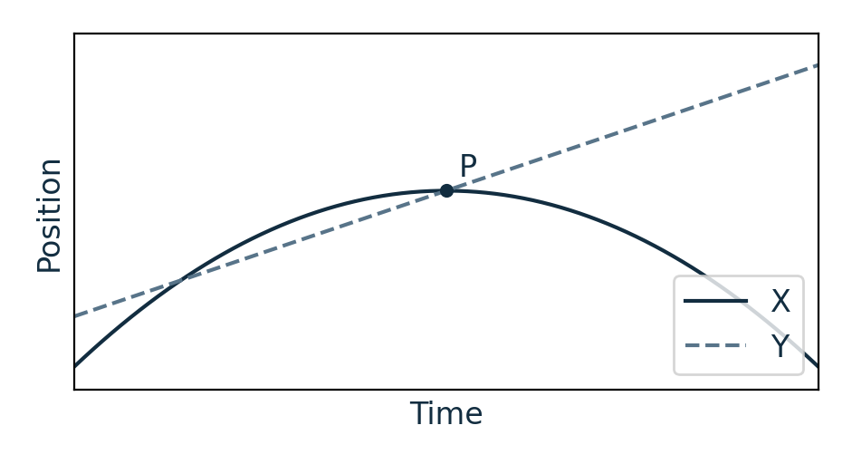
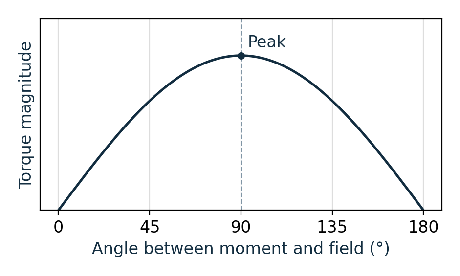
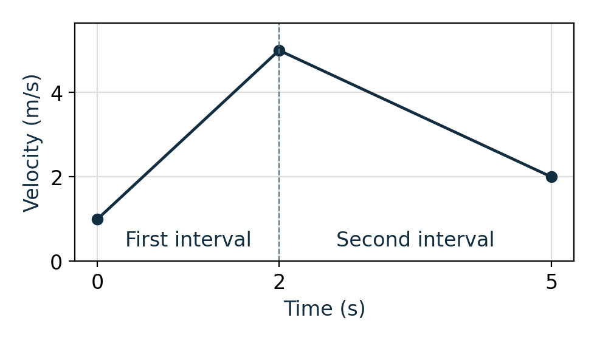
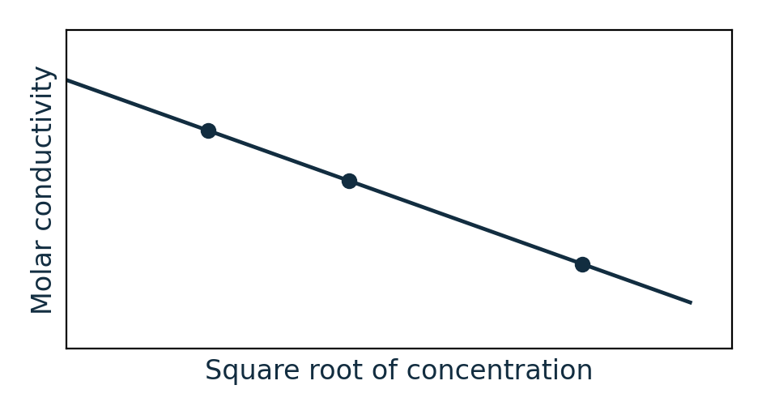
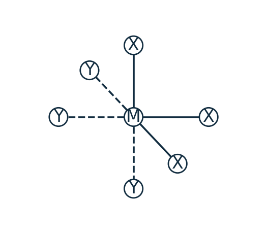
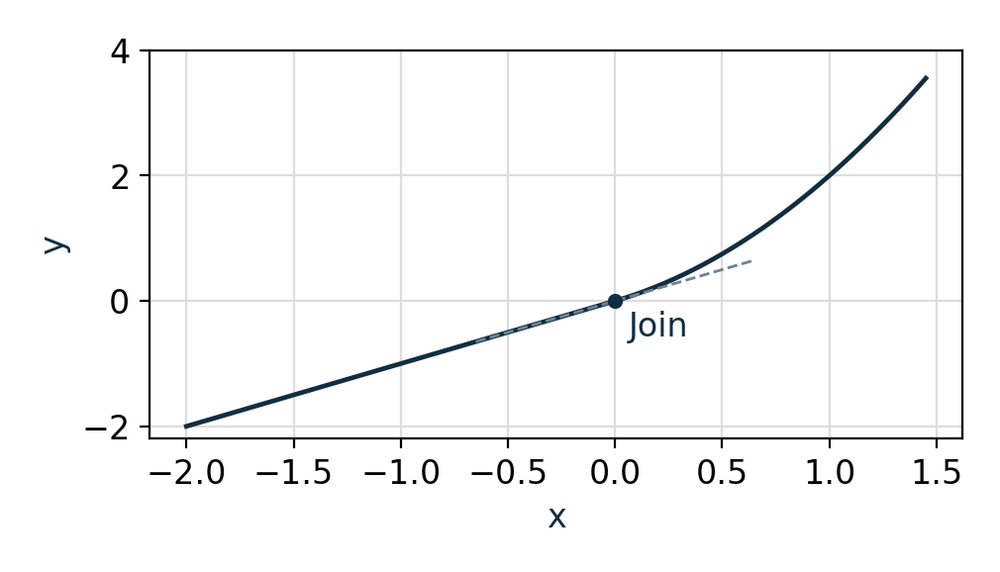
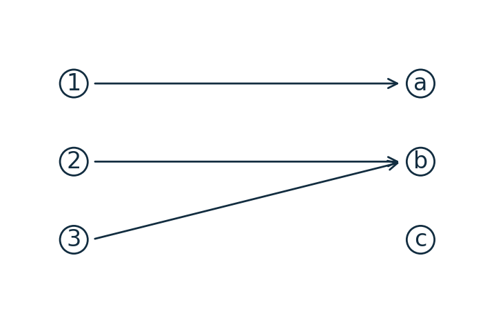
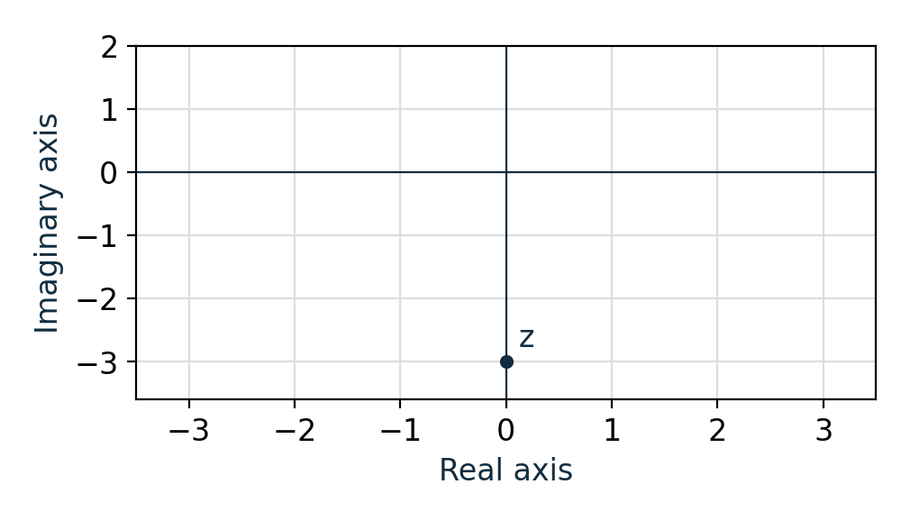
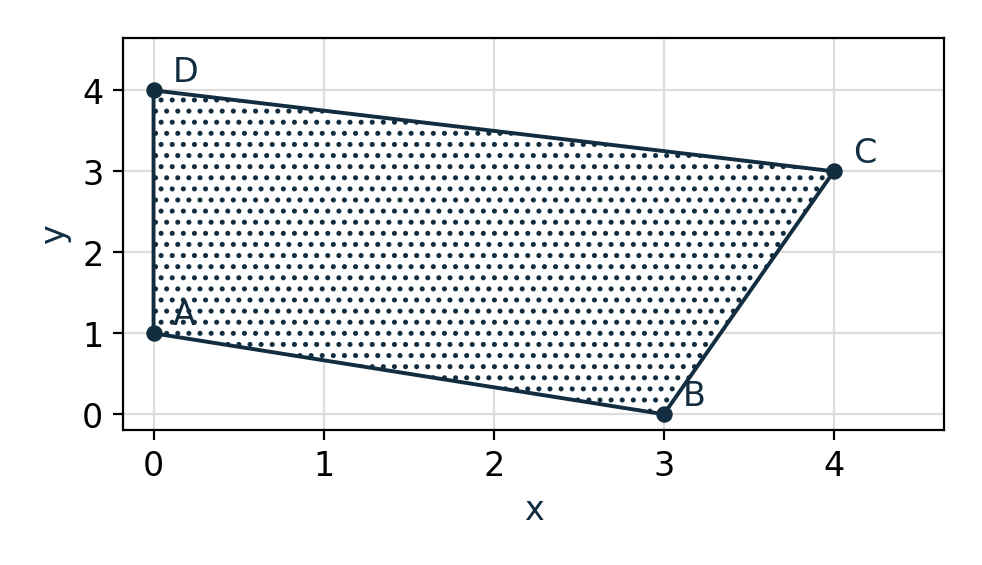
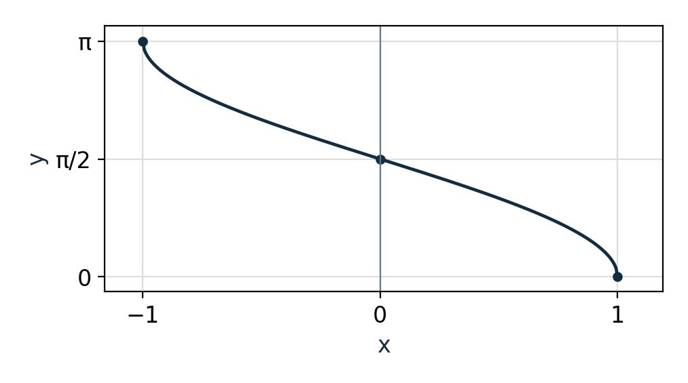

COMEDK UGET Test 18
180 minutes · 180 questions · +1 per correct answer · No negative marking
Physics
Q001. A wire at a reference temperature has conductivity σ. At a higher temperature, a wire of the same material and length needs a cross-sectional area 1.20 times larger to retain the original resistance. What is its conductivity at the higher temperature?
A) 6σ/5
B) σ/5
C) 5σ/6
D) σ
Worked solution
Answer: (C) 5σ/6
Why and working: Equal R means equal σA at the same L. The area grows by 6/5, so the conductivity must be 5/6 of its original value.
Why not the others: (A) uses the area factor directly. (B) mistakes the increment for the new value. (D) equal resistance does not mean equal conductivity if geometry changes.
Q002. Two independent identical vertical springs support one rigid plate in parallel. A 12 N load extends both by 3 cm. What is the spring constant of each spring?
A) 400 N/m
B) 100 N/m
C) 4 N/m
D) 200 N/m
Worked solution
Answer: (D) 200 N/m
Why and working: Each spring supplies half the force, 6 N, at extension 0.03 m. Thus k=6/0.03=200 N/m.
Why not the others: (A) gives the pair's effective stiffness. (B) divides the force twice. (C) fails to convert centimetres.
Q003. A positively charged particle enters crossed uniform fields with v east, B north and E down. When v=E/B the forces cancel. If the particle enters with half that speed, what is its initial net force direction?
A) Up
B) East
C) Down
D) North
Worked solution
Answer: (C) Down
Why and working: East cross north points up, so the magnetic force opposes the downward electric force. Halving v halves only the magnetic term, leaving a downward resultant.
Why not the others: (A) magnetic force is now smaller. (B) the individual forces are vertical. (D) the force is not along B.
Q004. A small bismuth specimen is placed near the strongest region of a nonuniform field. What feature of its response distinguishes it from aluminium under the same conditions?
A) It tends to move toward weaker field, whereas aluminium tends toward stronger field
B) Both move toward stronger field with persistent magnetisation
C) It moves toward stronger field, but aluminium is repelled
D) Neither responds because neither is iron
Worked solution
Answer: (A) It tends to move toward weaker field, whereas aluminium tends toward stronger field
Why and working: Bismuth is diamagnetic and is weakly repelled from stronger field. Aluminium is paramagnetic and weakly attracted toward stronger field.
Why not the others: (B) neither specimen is ferromagnetic. (C) interchanges the two responses. (D) weak magnetic responses occur in both.
Q005. Two pulses approach on a linear string. At one point during overlap their separate displacements would be +3 cm and −3 cm. What is true at that point?
A) Both pulses vanish permanently
B) The net displacement is +6 cm
C) The net displacement is zero at that instant, without requiring either pulse to disappear afterward
D) The net displacement is −6 cm
Worked solution
Answer: (C) The net displacement is zero at that instant, without requiring either pulse to disappear afterward
Why and working: Linear superposition adds signed displacements, giving zero at the point. It does not destroy the individual travelling disturbances.
Why not the others: (A) cancellation is local and temporary. (B) adds both amplitudes with a positive sign. (D) adds both with a negative sign.
Q006. A current in coil A rises at 8 A/s, inducing 0.24 V in coil B. If current in B instead changes at 3 A/s in the same fixed linear geometry, what emf magnitude is induced in A?
A) 0.64 V
B) 0.09 V
C) 0.24 V
D) 0.72 V
Worked solution
Answer: (B) 0.09 V
Why and working: The mutual inductance is reciprocal and equals 0.24/8=0.03 H. The new magnitude is 0.03×3=0.09 V.
Why not the others: (A) inverts the ramp ratio. (C) the different ramp changes the emf. (D) uses the first voltage as the mutual inductance.
Q007. Two branches across an AC supply carry rms currents 5 A in phase with voltage and 12 A lagging by 90°. A compensating branch supplies 7 A leading by 90°. What is the new ratio of wattless to in-phase current magnitudes?
A) 12/5
B) 7/5
C) 19/5
D) 1
Worked solution
Answer: (D) 1
Why and working: The two quadrature currents are opposite and leave 12−7=5 A lagging. The real component remains 5 A, so the ratio is one.
Why not the others: (A) ignores compensation. (B) gives the compensating branch ratio alone. (C) adds opposite quadrature components.
Q008. The frequency of a wave on a string is modelled as k√(F/μ)/L, where F is tension, μ mass per length and L a length. What are the dimensions of k?
A) Time
B) Dimensionless
C) Length
D) Inverse time
Worked solution
Answer: (B) Dimensionless
Why and working: F/μ has dimensions L²/T². Its square root divided by L already has dimensions 1/T.
Why not the others: (A) would make the expression dimensionless rather than a frequency. (C) adds an extra length factor. (D) would give inverse time squared.
Q009. An object is placed 18 cm in front of a thin converging lens and a real image appears 36 cm behind it. What is the focal length?
A) 18 cm
B) 24 cm
C) 12 cm
D) 54 cm
Worked solution
Answer: (C) 12 cm
Why and working: For positive real distances, 1/f=1/18+1/36=3/36. Thus f=12 cm.
Why not the others: (A) uses the object distance alone. (B) would result from the wrong reciprocal arithmetic. (D) adds distances directly.
Q010. A laser and a fixed slit give a broad central diffraction maximum on a screen 1 m away. The screen is moved to 2 m with slit and wavelength unchanged. What remains the same?
A) Its linear width on the screen
B) The distance from slit to screen
C) The angular spread of the central maximum
D) The linear spacing between the central and first dark regions
Worked solution
Answer: (C) The angular spread of the central maximum
Why and working: Diffraction angles are fixed by the aperture and wavelength. Doubling projection distance increases the linear size without changing those angles.
Why not the others: (A) the same angles project onto a greater width. (B) the screen distance has doubled. (D) the projected distance to the first minimum changes too.
Q011. The two position–time traces in the graph have the same position at P. Which object changes its direction of motion there?

A) X only
B) Y only
C) Both
D) Neither
Worked solution
Answer: (A) X only
Why and working: X has a horizontal tangent at P with slope changing from positive to negative. Y retains a positive slope through P, so only X reverses.
Why not the others: (B) Y keeps moving in the positive direction. (C) their common position does not imply a common reversal. (D) X has a turning point at P.
Q012. An unfiltered circuit turns the negative half of a sinusoidal input into a positive lobe and preserves its positive half. Compared with the source frequency, what is the output pulse repetition frequency?
A) Equal
B) Half as large
C) Twice as large
D) Zero
Worked solution
Answer: (C) Twice as large
Why and working: Both half cycles make output lobes. Their spacing is one half of the original sinusoidal period.
Why not the others: (A) would apply to passing one pulse per full period. (B) inverts the frequency change. (D) the output pulsates rather than staying constant.
Q013. A closed surface cuts through no charge and surrounds an electric dipole entirely. Which conclusion about total outward flux and local field is valid?
A) Flux is positive because the positive charge wins
B) Flux is negative because the negative charge attracts field lines
C) The field must vanish everywhere on the surface
D) Total flux is zero, although local field need not be zero
Worked solution
Answer: (D) Total flux is zero, although local field need not be zero
Why and working: The enclosed algebraic charge is zero, so Gauss's law gives zero total flux. The dipole can still create nonzero fields at individual surface points.
Why not the others: (A) both charges are enclosed with equal magnitudes. (B) net charge remains zero. (C) zero integral does not mean zero integrand.
Q014. Two displacements have vectors u=(3,1) and v=(1,−2) in metres. If w+v=u, what is w?
A) (4,−1) m
B) (2,3) m
C) (−2,−3) m
D) (2,−1) m
Worked solution
Answer: (B) (2,3) m
Why and working: Rearrange to w=u−v. Subtract the components, giving 3−1=2 and 1−(−2)=3.
Why not the others: (A) adds instead of subtracting. (C) reverses the difference. (D) adds the signed y-components instead of subtracting.
Q015. After a neutral dielectric is inserted into a capacitor, its two faces carry opposite bound charges. Why does the slab's net charge remain zero?
A) It gains electrons on both faces equally
B) Only its positively charged nuclei leave through the plates
C) Polarisation redistributes charge within the slab rather than bringing free charge into it
D) Dielectrics cannot have any surface charge
Worked solution
Answer: (C) Polarisation redistributes charge within the slab rather than bringing free charge into it
Why and working: Opposite bound charges are induced by microscopic displacement or alignment. The insert remains electrically neutral overall.
Why not the others: (A) extra electrons on both faces would make net negative charge. (B) ordinary polarisation does not remove nuclei. (D) bound surface charges can occur.
Q016. A cell of emf 8 V is being charged at 1.5 A through internal resistance 2 Ω. What terminal voltage is needed across the cell?
A) 11 V
B) 5 V
C) 8 V
D) 3 V
Worked solution
Answer: (A) 11 V
Why and working: Charging reverses the current relative to discharge. The terminal potential must exceed the emf by Ir=3 V.
Why not the others: (B) uses the discharge sign. (C) neglects internal resistance. (D) gives only the resistive rise.
Q017. A table exerts an upward normal force on a stationary book. What is the third-law partner of that force?
A) The downward contact force the book exerts on the table
B) The downward gravitational force on the book
C) The upward gravitational force the book exerts on Earth
D) The combined force of Earth and table on the book
Worked solution
Answer: (A) The downward contact force the book exerts on the table
Why and working: The contact pair consists of equal opposite forces between the same two bodies: table on book and book on table.
Why not the others: (B) that acts on the same book. (C) forms the partner of the book's weight, not the normal force. (D) a resultant on the book is not the partner.
Q018. A conductor of length 0.40 m in a 0.50 T uniform field carries 5 A perpendicular to the field. If the current reverses with magnitude fixed, what happens to its magnetic force?
A) It reverses and doubles in magnitude
B) It stays 1 N in the original direction
C) It reverses and still has magnitude 1 N
D) It vanishes
Worked solution
Answer: (C) It reverses and still has magnitude 1 N
Why and working: Magnitude is BIL=0.50×5×0.40=1 N. Reversing the current vector negates I L×B.
Why not the others: (A) the magnitude factors do not change. (B) the cross product changes sign. (D) the conductor is still transverse to B.
Q019. A ferromagnetic specimen and a reference sample are placed in the same weak applied field. On warming the specimen just above its Curie temperature, which measurement would show the magnetic transition most directly?
A) Its mass becomes zero as the applied field is removed
B) Its spontaneous magnetisation vanishes when the weak applied field is removed
C) Its atomic number changes discontinuously
D) Its induced response in the weak field must become exactly zero at every temperature above the transition
Worked solution
Answer: (B) Its spontaneous magnetisation vanishes when the weak applied field is removed
Why and working: At the Curie transition spontaneous long-range ordering is lost. A small externally induced response may persist, but it must be distinguished from spontaneous magnetisation.
Why not the others: (A) ordinary heating does not eliminate mass. (C) magnetic ordering does not change nuclei. (D) paramagnetic induction can persist.
Q020. An ideal spring is first stretched 4 cm and then pushed back to a 2 cm extension. What fraction of its initial elastic energy is released in this change?
A) 1/4
B) 3/4
C) 1/2
D) 2
Worked solution
Answer: (B) 3/4
Why and working: Since energy is kx²/2, the final energy is one quarter of the initial. The released fraction is 1−1/4.
Why not the others: (A) gives the fraction remaining. (C) assumes linear dependence on extension. (D) exceeds the initial stored energy.
Q021. A rotating generator coil passes through the orientation of zero magnetic flux. For uniform rotation and a steady field, what is the emf magnitude then?
A) It is also zero
B) It equals one half of its maximum in every geometry
C) It is at its maximum
D) It stays constant throughout all future rotations
Worked solution
Answer: (C) It is at its maximum
Why and working: Flux has cosine dependence and the induced emf its time derivative. At zero cosine the magnitude of sine is one.
Why not the others: (A) confuses flux with its derivative. (B) the derivative is at an extremum. (D) the instantaneous emf varies sinusoidally.
Q022. A thin lens forms an upright image whose height is three times the object's. The object is real. What does this imply about the image and lens?
A) The image is real and the lens is diverging
B) The image is virtual and the lens is converging
C) The image is virtual and the lens must be diverging
D) The image is real and inverted
Worked solution
Answer: (B) The image is virtual and the lens is converging
Why and working: Positive magnification for one thin lens with a real object means a virtual upright image. A diverging lens gives an upright image reduced in size, so this enlarged image requires a converging lens.
Why not the others: (A) contradicts the magnification and real-object condition. (C) a diverging lens cannot give this magnification for a real object. (D) the upright condition excludes an inverted image.
Q023. A disk spins at angular speed ω on a frictionless axle. An initially nonrotating coaxial ring with twice the disk's moment of inertia is gently joined to it without external torque. What is the final common angular speed?
A) ω/3
B) ω/2
C) 2ω/3
D) ω
Worked solution
Answer: (A) ω/3
Why and working: Only the disk carries initial angular momentum Iω. The final inertia is I+2I=3I, so its rotation rate is ω/3.
Why not the others: (B) counts the ring inertia only. (C) misassigns initial momentum to the ring. (D) the added inertia changes the common speed.
Q024. A very long uniformly charged wire is enclosed by two coaxial Gaussian cylinders of the same length. The second cylinder's radius is 4 times the first's. How do curved-surface field and total flux change?
A) Both become one quarter
B) Field becomes one quarter and flux stays the same
C) Field stays fixed and flux becomes four times larger
D) Field becomes one sixteenth and flux stays the same
Worked solution
Answer: (B) Field becomes one quarter and flux stays the same
Why and working: The same charge is enclosed, so total flux is fixed. Curved area increases fourfold; end caps have zero normal field, so E drops by four.
Why not the others: (A) flux depends on enclosed charge. (C) a larger area comes with smaller field. (D) a line gives inverse-distance rather than inverse-square scaling.
Q025. Three identical capacitors of capacitance C are available. Network X puts one in series with a parallel pair. Network Y puts one in parallel with a series pair. What is C_Y/C_X?
A) 4/9
B) 3/2
C) 1
D) 9/4
Worked solution
Answer: (D) 9/4
Why and working: X has equivalent (C×2C)/(C+2C)=2C/3. Y adds C+C/2=3C/2. Dividing gives 9/4.
Why not the others: (A) reverses the two networks. (B) gives Y relative to one capacitor only. (C) series and parallel do not interchange without changing capacitance.
Q026. Under a uniform-density planet model, the acceleration due to gravity at a depth d is 75% of its surface value. What is d in terms of radius R?
A) 3R/4
B) R/2
C) R/16
D) R/4
Worked solution
Answer: (D) R/4
Why and working: Inside a uniform sphere g scales with distance from the centre. Thus (R−d)/R=0.75, giving d=R/4.
Why not the others: (A) gives the radius from the centre. (B) would produce half the surface gravity. (C) incorrectly squares the depth fraction.
Q027. Two identical cells have emf E and internal resistance r each. Compare their ideal short-circuit currents when they are joined in aiding series and in same-polarity parallel.
A) The parallel current is twice the series current
B) The series current is twice the parallel current
C) They are equal
D) Only the series arrangement gives a finite current
Worked solution
Answer: (A) The parallel current is twice the series current
Why and working: Series gives 2E/(2r)=E/r. Parallel gives E/(r/2)=2E/r, assuming r>0.
Why not the others: (B) reverses the comparison. (C) does not account for the parallel resistance reduction. (D) nonzero internal resistance gives finite current in both.
Q028. Two parallel long wires attract. The magnitude of the first wire's current is halved and the distance is halved, with all senses unchanged. What happens to force per unit length?
A) It stays attractive and unchanged in magnitude
B) It stays attractive and halves
C) It doubles and becomes repulsive
D) It becomes zero
Worked solution
Answer: (A) It stays attractive and unchanged in magnitude
Why and working: Magnitude scales as I₁I₂/d; the two half factors cancel. The unchanged relative current sense preserves attraction.
Why not the others: (B) uses the current change without the distance change. (C) both magnitude and direction claims are wrong. (D) neither current becomes zero.
Q029. A wire is under small tensile strain ε. Its Poisson ratio is 0.30. To first order, by what fractional amount does its circular cross-sectional area decrease?
A) 0.30ε
B) 0.09ε
C) 0.60ε
D) 1.30ε
Worked solution
Answer: (C) 0.60ε
Why and working: The diameter fractional change is −0.30ε. Area is proportional to diameter squared, so the first-order area change is twice that signed fraction.
Why not the others: (A) gives the diameter change only. (B) squares a small change instead of taking the linear term. (D) incorrectly adds the axial strain to an area change.
Q030. An ideal transformer rated for 230 V at its primary gives 23 V at the secondary. If the secondary draws 4 A rms, what input power is drawn for a purely resistive load?
A) 920 W
B) 23 W
C) 0 W
D) 92 W
Worked solution
Answer: (D) 92 W
Why and working: The output real power is 23×4=92 W. An ideal transformer takes the same input power.
Why not the others: (A) uses primary voltage with secondary current. (B) gives voltage rather than power. (C) ideal means no loss rather than no input.
Q031. Two identical converging thin lenses of focal length 30 cm are placed in contact in air. An experimenter needs the pair's optical power in dioptres. Which value is correct?
A) +10/3 D
B) +20/3 D
C) +5/3 D
D) −20/3 D
Worked solution
Answer: (B) +20/3 D
Why and working: Each power is 1/0.30=10/3 D. Contact powers add directly to +20/3 D.
Why not the others: (A) uses one lens only. (C) adds focal lengths and then inverts. (D) gives a diverging sign.
Q032. At low Reynolds number a sphere settles in a liquid at terminal speed v. Its radius is kept fixed but its excess density above the liquid is halved. What viscosity in the new liquid would keep the same v?
A) Twice the original viscosity
B) Four times the original viscosity
C) One half the original viscosity
D) The original viscosity
Worked solution
Answer: (C) One half the original viscosity
Why and working: Terminal speed scales as r²(ρ_s−ρ_f)/η. Keeping the quotient constant when the density difference halves requires halving η.
Why not the others: (A) would lower the terminal speed to one quarter. (B) would lower it further. (D) would give half the original speed.
Q033. A Gaussian pillbox crosses one infinite charged insulating sheet. If the area of each cap doubles without changing the sheet's surface charge density, what happens to the pillbox's total flux?
A) It halves
B) It doubles
C) It stays fixed
D) It quadruples
Worked solution
Answer: (B) It doubles
Why and working: The pillbox encloses charge σA, where A is the cap area. Doubling A doubles flux σA/ε₀ while the field itself is unchanged.
Why not the others: (A) inverts the area factor. (C) confuses constant field with constant flux. (D) squares an area factor that is already specified.
Q034. An isolated ideal charged parallel-plate capacitor has its plate spacing tripled without changing charge or area. How do its field and voltage change?
A) Both triple
B) Field is unchanged and voltage triples
C) Field is one third and voltage is unchanged
D) Both stay unchanged
Worked solution
Answer: (B) Field is unchanged and voltage triples
Why and working: For large ideal plates, fixed Q/A fixes E. The potential difference V=Ed grows in direct proportion to spacing.
Why not the others: (A) spacing alone does not change the ideal field. (C) that would describe fixed voltage instead. (D) the increased field distance changes the voltage.
Q035. A 100 g metal at 80°C transfers 900 J while cooling to 50°C. What is its specific heat, assuming no phase change?
A) 300 J/(kg·K)
B) 30 J/(kg·K)
C) 90 J/(kg·K)
D) 27000 J/(kg·K)
Worked solution
Answer: (A) 300 J/(kg·K)
Why and working: Use energy magnitude Q=mcΔT. Thus c=900/(0.100×30)=300 in SI units.
Why not the others: (B) uses a wrong mass or temperature conversion. (C) uses mass in the numerator. (D) multiplies by the temperature drop.
Q036. A junction receives 5 A and 3 A through two branches. It sends 2 A through a third branch and the rest through a 4 Ω resistor. What potential drop occurs along that resistor?
A) 32 V
B) 12 V
C) 8 V
D) 24 V
Worked solution
Answer: (D) 24 V
Why and working: The remaining current is 5+3−2=6 A. Its resistor drop is 6×4=24 V.
Why not the others: (A) ignores the separate 2 A exit. (B) mistakes the remaining current. (C) uses the current in the other outgoing branch.
Q037. The plotted torque data are for one rigid current loop in a uniform field. What quantity does the ordinate at θ=90° represent?

A) The product of the loop's magnetic moment magnitude and the field strength
B) Their ratio
C) Their sum
D) Zero
Worked solution
Answer: (A) The product of the loop's magnetic moment magnitude and the field strength
Why and working: The torque law is τ=mB sin θ. With θ=90°, the sine factor is one, leaving mB.
Why not the others: (B) torque depends on the product. (C) the quantities have different dimensions and are not added. (D) perpendicular orientation gives maximum magnitude.
Q038. A refrigerator transfers heat from a colder cabinet to warmer air. Which condition reconciles this with the second law?
A) The transfer happens spontaneously as the sole effect
B) The cold cabinet must first become hotter than room air
C) The warmer surroundings receive no heat
D) The device uses work input to drive the heat transfer
Worked solution
Answer: (D) The device uses work input to drive the heat transfer
Why and working: Moving heat from cold to hot requires an additional effect, such as electrical work supplied to a refrigerator.
Why not the others: (A) that would violate the Clausius statement. (B) refrigeration maintains the cold region below ambient. (C) heat is rejected to the warmer surroundings.
Q039. A prism has angle 50°. A particular ray strikes at 40° and emerges at 35°, both relative to the corresponding face normals. What is its deviation?
A) 15°
B) 50°
C) 25°
D) 75°
Worked solution
Answer: (C) 25°
Why and working: For a prism δ=i+e−A. Substituting gives 40°+35°−50°=25°.
Why not the others: (A) uses the wrong sum of angular deviations. (B) gives the apex angle. (D) omits subtracting the apex angle.
Q040. A spherical shell of radius R carries a spherically symmetric charge +Q. A point charge −Q is at its centre. What is outward flux through a sphere of radius R/2 about the centre?
A) Zero
B) +Q/ε₀
C) −Q/ε₀
D) −Q/(4ε₀)
Worked solution
Answer: (C) −Q/ε₀
Why and working: The inner surface encloses the central negative charge and none of the shell charge. Hence flux equals the enclosed −Q divided by ε₀.
Why not the others: (A) uses the net charge of the entire outside system. (B) uses the wrong enclosed sign. (D) incorrectly scales total flux by Gaussian area.
Q041. For a rigid nonlinear polyatomic ideal gas with vibrations frozen, what are the active translational and rotational degrees of freedom respectively?
A) 3 and 2
B) 3 and 3
C) 2 and 3
D) 3 and 0
Worked solution
Answer: (B) 3 and 3
Why and working: Its centre of mass moves in three directions. A nonlinear molecule can also rotate about three independent axes.
Why not the others: (A) fits a linear rigid molecule. (C) translation has all three space directions. (D) ignores rotational motion.
Q042. Two capacitors of capacitances C and 4C store the same energy. What is the voltage of the larger capacitor divided by that of the smaller?
A) 1/4
B) 2
C) 4
D) 1/2
Worked solution
Answer: (D) 1/2
Why and working: At equal energy CV² is fixed. A fourfold capacitance therefore needs half the voltage.
Why not the others: (A) uses linear rather than square-root scaling. (B) inverts the voltage relation. (C) uses the capacitance ratio directly.
Q043. Two resistance dividers have top and bottom values 3 Ω, 6 Ω and 4 Ω, 8 Ω. An ideal null detector joins their midpoints across the same supply. Which change produces a nonzero detector reading?
A) Double all four arms
B) Double both arms of the first divider
C) Halve both arms of the second divider
D) Increase only the top 3 Ω arm to 6 Ω
Worked solution
Answer: (D) Increase only the top 3 Ω arm to 6 Ω
Why and working: Initially both ratios are 1:2. Altering only the 3 Ω arm changes one ratio to 1:1, so the midpoint voltages differ.
Why not the others: (A) common scaling preserves both ratios. (B) scaling both arms of one divider preserves its ratio. (C) both halves of that pair scale equally.
Q044. An undamped oscillator passes one point with potential energy 20% of its total, then reaches another point with potential energy 55%. What fraction of its total energy was transferred out of kinetic form between the points?
A) 35%
B) 55%
C) 75%
D) 20%
Worked solution
Answer: (A) 35%
Why and working: Total mechanical energy is constant. The potential fraction rises by 55−20=35 percentage points, exactly the fraction lost from kinetic energy.
Why not the others: (B) uses the final potential fraction as the increment. (C) adds rather than subtracts. (D) gives the initial potential fraction.
Q045. A galvanometer has current sensitivity 20 divisions/mA. A 100 Ω series resistance is added to a 20 Ω coil for use as a voltmeter. What is the voltage sensitivity in divisions per volt?
A) 20 divisions/V
B) About 167 divisions/V
C) 1000 divisions/V
D) About 2400 divisions/V
Worked solution
Answer: (B) About 167 divisions/V
Why and working: A volt across 120 Ω gives 1000/120 mA. Multiply by 20 divisions/mA to get about 166.7 divisions/V.
Why not the others: (A) copies the current sensitivity without conversion. (C) omits the added resistance. (D) multiplies rather than dividing by total resistance.
Q046. A compound microscope has objective magnification magnitude 10 at a fixed intermediate image. The eye's near point is 25 cm and the eyepiece focal length is 5 cm. Under the usual approximation that the objective factor stays fixed, how much greater is the near-point total magnification than the infinity value?
A) 10 magnification units
B) 5 magnification units
C) 1 magnification unit
D) 50 magnification units
Worked solution
Answer: (A) 10 magnification units
Why and working: The eyepiece factors are 1+D/f_e and D/f_e. Their difference is one, which becomes ten when multiplied by the unchanged objective factor.
Why not the others: (B) gives the infinity eyepiece factor. (C) gives the eyepiece difference alone. (D) gives the total for viewing at infinity.
Q047. A plane mirror rotates by 8° about an axis perpendicular to the incidence plane, with the incoming ray fixed. By how much does the reflected ray turn?
A) 8°
B) 4°
C) 16°
D) Zero
Worked solution
Answer: (C) 16°
Why and working: The normal turns by 8°. The reflection direction is obtained by reflecting the fixed incident direction about the normal, so it turns by twice the normal rotation.
Why not the others: (A) tracks only the rotation of the normal. (B) halves it instead of doubling. (D) the mirrored direction depends on normal orientation.
Q048. In normal adjustment two telescopes have the same objective focal length. The reflecting telescope has 48-fold angular magnification while the refracting one has 24-fold. Compare their eyepiece focal lengths.
A) The reflecting telescope's eyepiece focal length is half as large
B) It is twice as large
C) They must be equal
D) The reflecting telescope needs no eyepiece
Worked solution
Answer: (A) The reflecting telescope's eyepiece focal length is half as large
Why and working: Magnitude is f_o/f_e for both designs. With common f_o, double magnification requires half the eyepiece focal length.
Why not the others: (B) uses direct proportionality. (C) would give the same magnification. (D) a reflecting objective does not replace the eyepiece.
Q049. Two conducting spheres touch while both are isolated from ground. The first loses 7 nC of net charge, in the algebraic sense. What is the second sphere's change?
A) −7 nC
B) Zero
C) It depends on their capacitances even for a given first change
D) +7 nC
Worked solution
Answer: (D) +7 nC
Why and working: Charge exchange preserves their algebraic total. The first change is −7 nC and the second must cancel it.
Why not the others: (A) would reduce total charge. (B) would leave the first change uncompensated. (C) capacitance can influence final distribution, not the balance given a known change.
Q050. The graph shows velocity changing linearly over two intervals. Over which indicated interval is acceleration negative, and on which does the object have positive displacement?

A) Acceleration negative on the first interval, displacement positive only on the second
B) Acceleration negative on the second interval, displacement positive on both
C) Acceleration negative on the second interval, displacement negative there
D) Acceleration zero on both intervals and displacement zero on the first
Worked solution
Answer: (B) Acceleration negative on the second interval, displacement positive on both
Why and working: Slope is downward only on the second interval. Signed area is positive on both because the graph stays above the time axis.
Why not the others: (A) swaps slope sign and overlooks positive velocity on the first interval. (C) negative slope is not negative velocity. (D) the plotted slopes and areas are both nonzero.
Q051. A −4 nC source charge is fixed in vacuum. Which point has the lower potential relative to infinity: 10 cm or 20 cm from it?
A) 10 cm
B) 20 cm
C) They have equal potential
D) Potential is zero at either finite radius
Worked solution
Answer: (A) 10 cm
Why and working: V=kQ/r is negative for this source. The nearer point has the larger magnitude and thus the more negative value.
Why not the others: (B) farther away the potential tends upward to zero. (C) the radii differ. (D) zero reference is at infinity.
Q052. A steady current branches into two wires of the same metal. The branches have equal cross-sectional areas, but branch B takes 25% of the incoming current while branch A takes the rest. What is the drift speed ratio A:B?
A) 1:3
B) 1:1
C) 4:1
D) 3:1
Worked solution
Answer: (D) 3:1
Why and working: At fixed n and A the drift speed is proportional to branch current. The branch currents are 0.75I and 0.25I, giving 3:1.
Why not the others: (A) reverses the branches. (B) equal area does not give equal current density here. (C) compares the whole incoming current with branch B.
Q053. A vector of magnitude 10 has direction proportional to (0,−3,4). What is its z component?
A) 4
B) 6
C) 8
D) −8
Worked solution
Answer: (C) 8
Why and working: The direction vector has magnitude 5. Normalising and multiplying by 10 gives z=10×4/5=8.
Why not the others: (A) gives the unscaled direction ratio. (B) uses the magnitude of the y component. (D) reverses the z direction.
Q054. An unshielded compass beside a DC wire is deflected from its no-current reading. If the current is gradually reduced to zero, what direction does it approach?
A) Its original no-current orientation governed by Earth's local field
B) An orientation that always points along the wire
C) A compulsory right-angle turn from its original orientation
D) No orientation because Earth has no field when the wire is off
Worked solution
Answer: (A) Its original no-current orientation governed by Earth's local field
Why and working: The wire's field contribution decreases with current. At zero current the compass aligns with the remaining local terrestrial field.
Why not the others: (B) the wire's contribution was circular and is now removed. (C) there is no fixed turn requirement. (D) the terrestrial contribution does not depend on the switch.
Q055. A loop has the same magnetic dipole moment as a bar magnet. Far away compared with their sizes, what similarity follows in the dipole approximation?
A) Their magnetic fields have the same leading pattern and strength at corresponding points
B) They have identical fields at every nearby point
C) Both generate isolated magnetic monopoles
D) Only the magnet's field can extend into vacuum
Worked solution
Answer: (A) Their magnetic fields have the same leading pattern and strength at corresponding points
Why and working: A matched dipole moment sets the leading far field. Details of source shape can still affect higher-order contributions at short distance.
Why not the others: (B) far-field agreement does not imply near-field identity. (C) neither model contains such monopoles. (D) both fields propagate through vacuum.
Q056. Two skaters push apart from rest on a frictionless horizontal surface. One has twice the mass of the other. Which comparison describes their subsequent momentum magnitudes?
A) The heavier skater's is twice as large
B) Equal
C) The lighter skater's is twice as large
D) Both are zero
Worked solution
Answer: (B) Equal
Why and working: With no significant external horizontal impulse, total horizontal momentum remains zero. The two nonzero momenta must be opposite and equal in magnitude.
Why not the others: (A) the heavier skater moves more slowly. (C) greater speed does not imply greater momentum for unequal masses. (D) the push gives each skater a nonzero impulse.
Q057. A rigid flat loop of area A lies in a uniform field B. It rotates from its plane perpendicular to B to its plane parallel to B. What is its final flux magnitude?
A) BA
B) Zero
C) BA/2
D) 2BA
Worked solution
Answer: (B) Zero
Why and working: Flux uses the angle between the field and the normal. The final normal is perpendicular to B, so the scalar product vanishes.
Why not the others: (A) describes the initial magnitude. (C) would require a different angle. (D) exceeds the maximum possible magnitude.
Q058. A sinusoidal current has peak value 10 A. A second sinusoidal current has peak value 5 A. For equal resistances, what is average heating power of the first relative to the second?
A) Twice
B) Equal
C) Half as large
D) Four times
Worked solution
Answer: (D) Four times
Why and working: Since rms current is peak divided by √2, the rms ratio is two. Heating power is proportional to rms current squared, so the ratio is four.
Why not the others: (A) uses current ratio rather than its square. (B) the current amplitudes differ. (C) inverts and misses the square.
Q059. A block follows either a short rough track or a longer rough track between the same initial and final heights. If the friction magnitude is the same constant on both paths, which work is the same on the two routes?
A) Work done by kinetic friction
B) Total work by gravity and kinetic friction
C) Neither individual work
D) Work done by gravity
Worked solution
Answer: (D) Work done by gravity
Why and working: Gravitational work depends only on height change. Frictional work is minus force times path length and differs here.
Why not the others: (A) depends on the path length. (B) the differing friction term makes the totals differ. (C) gravity is independent of route.
Q060. The electric flux through a capacitor gap changes uniformly by 8 in SI units over 2 s, with positive sign under a fixed normal. What is the signed displacement current through that surface?
A) −4ε₀
B) +16ε₀
C) Zero
D) +4ε₀
Worked solution
Answer: (D) +4ε₀
Why and working: The displacement current equals ε₀ times the time derivative of electric flux. A rise of 8 over 2 s gives +4ε₀.
Why not the others: (A) reverses the fixed-normal sign. (B) multiplies flux change by time. (C) nonzero changing flux contributes.
Chemistry
Q061. An ideal solution of a nonvolatile solute in solvent S has relative pressure lowering 0.10. Adding 10 mol of S at fixed solute amount changes the lowering to 0.05. How many moles of solute were present?
A) 0.5 mol
B) 2 mol
C) 1 mol
D) 9 mol
Worked solution
Answer: (C) 1 mol
Why and working: Relative lowering is solute moles divided by total moles. Halving the ratio at fixed solute requires the initial total to double. The added 10 mol equals the initial total, so the solute was 0.10×10=1 mol.
Why not the others: (A) uses the final fraction with the initial total. (B) uses the final total with the initial fraction. (D) gives the initial solvent amount.
Q062. A powder sample has visually distinct orange and white grains and can be sorted into two pure solids. Which classification is established by the initial observation and separation?
A) A heterogeneous mixture
B) A homogeneous single compound
C) A pure element with variable atomic number
D) A homogeneous solution of the two solids
Worked solution
Answer: (A) A heterogeneous mixture
Why and working: Separate visibly distinguishable regions indicate more than one phase. Sorting changes which grains are present without chemically decomposing them.
Why not the others: (B) the sample contains two physically separable substances. (C) an element has one atomic number. (D) the grains are not dispersed as one phase.
Q063. The strong-electrolyte plot of molar conductivity Λ versus √c is approximately linear at very low concentrations. Why is the extrapolated value at √c=0 larger than Λ at the positive plotted concentrations?

A) Zero solute per litre makes specific conductivity and molar conductivity identical
B) Reduced interionic effects let the ions conduct more effectively per mole in the dilution limit
C) Strong electrolytes become permanently neutral molecules as c falls
D) Extrapolation sets every ion's mobility to zero
Worked solution
Answer: (B) Reduced interionic effects let the ions conduct more effectively per mole in the dilution limit
Why and working: Molar conductivity normalises by concentration. Strong ions remain substantially dissociated and their hindrance from other ions diminishes as concentration falls.
Why not the others: (A) the quantities have different definitions and units. (C) a typical strong electrolyte remains ionised on dilution. (D) limiting mobility is finite rather than zero.
Q064. A first-order reaction has consumed 75% of its initial reactant after 40 minutes. What fraction of the initial reactant remains at 50 minutes?
A) 1/8
B) 1/16
C) 1/(4√2)
D) 1/2
Worked solution
Answer: (C) 1/(4√2)
Why and working: One quarter remains after two half-lives, so the half-life is 20 minutes. The next ten minutes multiply the remaining fraction by 2^(−1/2).
Why not the others: (A) gives the fraction after an extra full half-life. (B) corresponds to four half-lives. (D) does not account for the first forty minutes.
Q065. A beam of cathode rays bends toward a positively charged plate. Which property of the particles does this establish?
A) They bear negative charge
B) They are neutral particles
C) They are positive ions
D) They contain no matter at all because the beam bends
Worked solution
Answer: (A) They bear negative charge
Why and working: Opposite charges attract, so bending toward the positive plate indicates negative charge. Cathode rays consist of electrons.
Why not the others: (B) a neutral particle has no direct electrostatic force from uniform E. (C) positive charges would be pushed away. (D) deflection by a field is consistent with charged particles.
Q066. A copper alloy contains a comparable-size metal substituting at some copper lattice positions. Which change would describe an interstitial arrangement instead?
A) More copper atoms leaving the lattice so guests can replace them
B) Much smaller guest atoms occupying gaps while copper stays on its normal sites
C) The alloy separating into two large crystallites with no shared lattice
D) Replacing every Cu atom one for one with the guest
Worked solution
Answer: (B) Much smaller guest atoms occupying gaps while copper stays on its normal sites
Why and working: Interstitial occupation uses gaps, in contrast with replacing host atoms at the lattice sites.
Why not the others: (A) still describes site substitution. (C) is macroscopic phase separation. (D) also uses ordinary sites.
Q067. An octahedral d⁴ ion changes from low spin to high spin. Which movement changes its count of unpaired electrons?
A) A lower unpaired electron pairs with an upper electron in the lower set
B) One of the paired lower electrons is promoted to an upper orbital to become unpaired
C) Two electrons are added to the ion
D) No occupation changes because the number of d electrons stays four
Worked solution
Answer: (B) One of the paired lower electrons is promoted to an upper orbital to become unpaired
Why and working: Low-spin t₂g⁴ has one pair and two singles. High-spin t₂g³ e_g¹ gives four singles, with one electron moved from the pair to the upper set.
Why not the others: (A) describes the opposite change. (C) spin state changes at fixed d count. (D) the distribution changes even when total count does not.
Q068. Mendeleev sometimes put an element with greater atomic mass before one with lower atomic mass. What guided this exception to strict mass order?
A) Ordering by discovery dates only
B) Keeping every row the same length
C) Ensuring every neighbouring pair had equal atomic number
D) Maintaining groups of elements with similar chemical properties
Worked solution
Answer: (D) Maintaining groups of elements with similar chemical properties
Why and working: He gave chemical similarity and recurring valency patterns priority where mass order conflicted with periodic placement.
Why not the others: (A) discovery time was not the organising principle. (B) his periods did not have uniform lengths. (C) different elements have different atomic numbers.
Q069. In a pair of possible substitution intermediates, only one has a resonance contributor placing the positive ring charge at the carbon already bonded to Br. Why can that contributor help explain the orientation of bromobenzene substitution?
A) The bromine nucleus donates a proton to the ring
B) Bromine's electronegativity prohibits all resonance
C) The ring becomes an anion before donating its π electrons to the electrophile
D) A bromine lone pair can stabilise that cationic site by donation
Worked solution
Answer: (D) A bromine lone pair can stabilise that cationic site by donation
Why and working: The ipso cationic contributor occurs for ortho or para attack. Bromine can provide a lone pair into the deficient site even though it withdraws inductively overall.
Why not the others: (A) lone-pair electrons rather than nuclear protons participate. (B) resonance donation remains possible. (C) the σ complex is cationic.
Q070. Ethanol can be blended into petrol in suitable proportions. Which role best describes it in this application?
A) An inert metal catalyst for petrol combustion
B) An inorganic salt that supplies sodium ions
C) A noncombustible refrigerant replacing the fuel
D) A combustible oxygen-containing fuel component
Worked solution
Answer: (D) A combustible oxygen-containing fuel component
Why and working: Ethanol is a flammable alcohol and contributes chemical energy as a fuel blend component.
Why not the others: (A) it is consumed as a fuel, not a catalyst. (B) it is a covalent organic molecule. (C) the stated use exploits combustion.
Q071. Which Lewis structure feature explains why neutral NH₃ can form NH₄⁺ with H⁺?
A) Nitrogen contains four lone pairs and no covalent bonds
B) One nitrogen proton leaves the nucleus to bind incoming H⁺
C) Nitrogen has one lone pair available to make a fourth N–H bond
D) All three existing N–H bonds break before a fourth can form
Worked solution
Answer: (C) Nitrogen has one lone pair available to make a fourth N–H bond
Why and working: Nitrogen contributes five valence electrons; three bonds use one of its electrons each, leaving a pair. That pair can make the new bond.
Why not the others: (A) NH₃ has three existing bonds. (B) bonding does not move a nuclear proton. (D) coordination keeps the original three bonds.
Q072. Ethanal and 2,2-dimethylpropanal are mixed for an aldol-type addition. Which can act as the enolate donor under the usual α-hydrogen criterion?
A) Ethanal only
B) 2,2-Dimethylpropanal only
C) Both because every aldehyde carbon has an H
D) Neither because aldehydes cannot form enolates
Worked solution
Answer: (A) Ethanal only
Why and working: Ethanal's methyl group is α to C=O and bears H. The other aldehyde's α carbon has four carbon neighbours and no α H.
Why not the others: (B) that α carbon has no hydrogen. (C) the H on the formyl carbon is not α. (D) ethanal can give an enolate.
Q073. A cold benzenediazonium solution is added to activated phenol under mild alkaline conditions. Which structural linkage characterises the coloured coupling product?
A) An ether linkage with no nitrogen
B) An azo linkage −N=N− between aromatic rings
C) An amide bond between the two rings
D) A triple carbon–carbon bond joining the rings
Worked solution
Answer: (B) An azo linkage −N=N− between aromatic rings
Why and working: Azo coupling joins the diazonium-derived nitrogen pair to the activated phenolic ring. It retains the −N=N− group between the aromatic units.
Why not the others: (A) would omit the diazonium nitrogens. (C) no amide carbonyl is formed. (D) the new linkage includes nitrogen.
Q074. A closed piston–cylinder containing gas is defined as the system. Which entity is part of its surroundings?
A) The external weights pressing down on the piston
B) The gas molecules inside
C) The internal energy of the gas
D) The pressure calculated for the gas itself
Worked solution
Answer: (A) The external weights pressing down on the piston
Why and working: The stipulated system consists of the gas only. The external weights exchange mechanical effects through its boundary and belong to the surroundings.
Why not the others: (B) these constitute the system. (C) a system property is not an external object. (D) gas pressure describes the system's state.
Q075. Which carbohydrate feature permits cellulose to resist tension in plant cell walls?
A) Its polymer is made of amino acids with peptide bonds
B) Its compact globules provide the same structure as animal glycogen
C) It consists of isolated sugar molecules without covalent links
D) Extended β-linked glucose chains form fibres with interchain hydrogen bonding
Worked solution
Answer: (D) Extended β-linked glucose chains form fibres with interchain hydrogen bonding
Why and working: The β linkages allow extended chains that can pack and hydrogen-bond together. The resulting fibres support the wall mechanically.
Why not the others: (A) cellulose is a glucose polymer. (B) glycogen is branched and serves storage. (C) glycosidic bonds connect its residues.
Q076. A dilute solution freezes 0.60 K below pure solvent. Its solute remains in solution while half the solvent mass is removed. What is the new freezing depression under ideal conditions and fixed van't Hoff factor?
A) 1.20 K
B) 0.30 K
C) 0.60 K
D) 2.40 K
Worked solution
Answer: (A) 1.20 K
Why and working: At fixed solute moles, halving solvent kilograms doubles molality. The depression K_fim doubles accordingly.
Why not the others: (B) scales directly with remaining solvent mass. (C) ignores the change in molality. (D) squares the molality factor.
Q077. A colourless reversible complex forms when two aqueous species are mixed, and its composition becomes constant in a closed flask. Which observation would establish dynamic chemical balance rather than just cessation?
A) No molecular changes are observed in either direction
B) The liquid boils away until both species are absent
C) A tracer follows ongoing ligand exchange even though bulk concentrations stay constant
D) The final temperature changes once and then stays fixed
Worked solution
Answer: (C) A tracer follows ongoing ligand exchange even though bulk concentrations stay constant
Why and working: At equilibrium forward and reverse chemical changes continue at equal rates. Label exchange can reveal molecular turnover without changing bulk amounts.
Why not the others: (A) that observation alone would not establish opposing continuing reactions. (B) loss from the vessel is not the stipulated equilibrium. (D) constant temperature alone does not demonstrate chemical exchange.
Q078. Two series electrolysis cells carry the same charge. One produces H₂ from H⁺ and one deposits Ag from Ag⁺. What mole ratio H₂:Ag follows at ideal current efficiency?
A) 2:1
B) 1:1
C) 1:4
D) 1:2
Worked solution
Answer: (D) 1:2
Why and working: One H₂ molecule needs two electrons; one Ag atom needs one. Equal electron amounts therefore give half as many moles of H₂ as Ag.
Why not the others: (A) inverts the stoichiometric ratio. (B) ignores the two-electron hydrogen reaction. (C) uses four electrons per H₂ incorrectly.
Q079. Two effective collisions have identical orientation. In a simple threshold model, why can a third equally oriented collision fail to react?
A) Identical orientation guarantees reaction at every energy
B) The activation barrier is unrelated to whether reaction occurs
C) Successful encounters must first lose all of their kinetic energy
D) Its relative kinetic energy can be below the activation requirement
Worked solution
Answer: (D) Its relative kinetic energy can be below the activation requirement
Why and working: A favourable orientation does not ensure sufficient energy. An encounter below the barrier need not reach the reactive configuration.
Why not the others: (A) orientation is only one condition. (B) the barrier is decisive in this model. (C) reactants need energy to cross the barrier.
Q080. In Zn+Cu²⁺→Zn²⁺+Cu, how does the oxidation number of zinc change?
A) From 0 to +2 by losing electrons
B) From +2 to 0 by gaining electrons
C) From 0 to −2 by gaining electrons
D) It remains zero because the equation is balanced
Worked solution
Answer: (A) From 0 to +2 by losing electrons
Why and working: Elemental Zn has state zero. Zn²⁺ has state +2 after zinc loses two electrons.
Why not the others: (B) describes the reverse zinc change. (C) the product charge is positive. (D) balancing total charge does not keep each state fixed.
Q081. In the dichromate-to-Cr³⁺ half-reaction completed in acid, what is the ratio of water formed to Cr³⁺ formed?
A) 2:7
B) 7:1
C) 7:2
D) 14:2
Worked solution
Answer: (C) 7:2
Why and working: One Cr₂O₇²⁻ has seven oxygens that become seven H₂O and two chromium atoms that become two Cr³⁺.
Why not the others: (A) inverts the product ratio. (B) drops one chromium product. (D) uses hydrogen ions in place of water molecules.
Q082. The diagram shows a six-coordinate complex with identical ligands X occupying the three sites labelled X. What feature establishes the facial isomer?

A) The three X sites are pairwise at right angles and define one octahedral face
B) Two X sites oppose each other by 180°
C) All three X lie in a straight line through the metal
D) The complex has only three ligand positions
Worked solution
Answer: (A) The three X sites are pairwise at right angles and define one octahedral face
Why and working: In the pictured octahedron the X sites are the positive ends of three perpendicular axes. They lie on one face, unlike a meridional arrangement with an opposite pair.
Why not the others: (B) would identify a mer arrangement instead. (C) the sites lie on distinct axes. (D) there are also three Y sites.
Q083. Two miscible liquids have boiling points only a few degrees apart and no azeotrope under the conditions used. Which school-level method best improves their separation over one simple distillation?
A) Filtration through paper
B) Sublimation of both liquids
C) Fractional distillation
D) Magnetic separation
Worked solution
Answer: (C) Fractional distillation
Why and working: A fractionating column provides repeated vaporisation and condensation stages, enriching the more volatile component progressively.
Why not the others: (A) miscible liquids pass through a filter together. (B) sublimation is a solid-to-gas process. (D) there is no stated magnetic difference.
Q084. Which pairing matches a named compound to its chemical family and historical use?
A) DDT is an iodinated ether used as a refrigerant
B) Freon-12 is a chlorofluorocarbon used as a refrigerant
C) Iodoform is a chlorofluorocarbon used to chill air
D) Chloroform is a metallic pesticide with no carbon
Worked solution
Answer: (B) Freon-12 is a chlorofluorocarbon used as a refrigerant
Why and working: Freon-12 is CCl₂F₂ and historically served as a refrigerant. Its family contains carbon, chlorine and fluorine.
Why not the others: (A) DDT is an organochlorine pesticide. (C) iodoform is CHI₃. (D) chloroform is CHCl₃.
Q085. Why does adding dilute acid to sodium phenoxide regenerate phenol?
A) Sodium is oxidised to a metal inside the solution
B) Acid adds across and destroys every bond in the aromatic ring
C) The oxygen atom is removed from phenoxide as O₂
D) Phenoxide accepts a proton at oxygen
Worked solution
Answer: (D) Phenoxide accepts a proton at oxygen
Why and working: The negatively charged conjugate base undergoes protonation. Restoring its O–H bond gives phenol.
Why not the others: (A) sodium is already present as Na⁺. (B) this is proton transfer with the ring retained. (C) oxygen stays in the product.
Q086. A compound belongs to the alcohol series; another compound formed by shifting where OH sits has the same molecular formula. Which relationship best describes their connectivity change?
A) A change from alcohol to ether by replacing OH with a linking O
B) Chain-length change between different homologues
C) Position isomerism within one functional class
D) Identical connectivity with only a change of elemental formula
Worked solution
Answer: (C) Position isomerism within one functional class
Why and working: Changing the attachment position of OH while keeping formula and group gives position isomers, assuming the positions are inequivalent.
Why not the others: (A) OH remains an alcohol group. (B) homologues have different formulas. (D) the connectivity is what changes.
Q087. A manufacturer chooses an organic solvent that is a volatile liquid ketone rather than the aldehyde used in formalin. Which option meets that description?
A) Propanone
B) Methanal
C) Ethanal
D) Propan-2-ol
Worked solution
Answer: (A) Propanone
Why and working: Propanone, or acetone, is a volatile ketone solvent. Formalin is an aqueous preparation of methanal, an aldehyde.
Why not the others: (B) is the aldehyde in formalin. (C) is another aldehyde. (D) is an alcohol rather than a ketone.
Q088. After one peptide bond in a linear tetrapeptide is hydrolysed, two fragments of equal residue count are obtained. What are they?
A) Two dipeptides
B) A tripeptide and a free amino acid
C) Four free amino acids
D) Two tripeptides
Worked solution
Answer: (A) Two dipeptides
Why and working: The one broken bond partitions four residues into two groups. Equal counts give two residues in each fragment, each retaining one peptide bond.
Why not the others: (B) the two fragments would have unequal residue counts. (C) would require all three peptide bonds to break. (D) would require six original residues.
Q089. Why must 32 g of oxygen and 2 g of hydrogen that combine completely produce 34 g of product in a closed system with no other material changes?
A) Mass is proportional only to the number of resulting molecules
B) Mass is conserved in an ordinary chemical combination
C) Hydrogen nuclei turn into new oxygen nuclei
D) The heaviest reactant's mass alone is preserved
Worked solution
Answer: (B) Mass is conserved in an ordinary chemical combination
Why and working: The atoms are rearranged into products without loss from the closed system. The combined starting mass is 34 g.
Why not the others: (A) molecule count can change even while mass is conserved. (C) chemical combination does not transmute nuclei. (D) both reactant masses count.
Q090. A 1 L ideal solution of nonvolatile solute exerts osmotic pressure π at temperature T. All of it is diluted to 2 L and brought to 2T on the absolute scale without solute loss. What pressure follows under the same ideal model?
A) 2π
B) π
C) π/2
D) 4π
Worked solution
Answer: (B) π
Why and working: Osmotic pressure is CRT. Doubling volume halves C at fixed solute amount, while doubling T exactly compensates.
Why not the others: (A) uses only the temperature change. (C) uses only the dilution factor. (D) treats dilution as an increase in concentration.
Q091. An ordinary galvanic dry cell and a powered electrolytic cell are compared during operation. Which electrode process retains the same name in both?
A) Oxidation at the cathode
B) Oxidation at the anode
C) Reduction at the anode
D) Oxidation at the positive terminal in both cells
Worked solution
Answer: (B) Oxidation at the anode
Why and working: The name anode is assigned to the site of oxidation even though its terminal polarity differs between galvanic and electrolytic operation.
Why not the others: (A) the cathode is defined by reduction. (C) reduction occurs at the cathode. (D) the galvanic anode is negative during discharge.
Q092. A nucleus has 15 protons and 16 neutrons. Which specified nucleus is its isotope but not an isobar?
A) 15 protons and 17 neutrons
B) 16 protons and 15 neutrons
C) 14 protons and 17 neutrons
D) 16 protons and 16 neutrons
Worked solution
Answer: (A) 15 protons and 17 neutrons
Why and working: Isotopes have the same proton number, so the comparison must retain 15. Changing neutron count gives a different mass number.
Why not the others: (B) same total nucleon count with different protons gives an isobar. (C) also an isobar at mass number 31. (D) changes proton number and mass number.
Q093. An Arrhenius plot is made with ln k versus 1/T. Its slope is −6000 K. What activation energy does this imply if R=8.3 J/(mol·K)?
A) 0.72 kJ/mol
B) −49.8 kJ/mol
C) 49.8 kJ/mol
D) 498 kJ/mol
Worked solution
Answer: (C) 49.8 kJ/mol
Why and working: The slope is −E_a/R. Therefore E_a=6000×8.3=49800 J/mol, or 49.8 kJ/mol.
Why not the others: (A) divides by R instead of multiplying. (B) uses the slope sign as the energy sign. (D) converts joules to kilojoules incorrectly.
Q094. When MnO₄⁻ is reduced to MnO₂ in neutral medium, how many electrons are accepted per Mn atom?
A) One
B) Five
C) Three
D) Seven
Worked solution
Answer: (C) Three
Why and working: Manganese goes from +7 in permanganate to +4 in MnO₂. The oxidation-number decrease is three.
Why not the others: (A) would stop at manganate. (B) would reduce to the +2 state. (D) would imply manganese metal.
Q095. In the modern periodic table, what property fixes an element's position as a unique sequence number?
A) Its mass number for the most abundant isotope
B) Its atomic number
C) Its atomic mass rounded to an integer
D) Its physical density
Worked solution
Answer: (B) Its atomic number
Why and working: Modern periodic law arranges elements by proton number. Isotopic masses vary without changing the element's position.
Why not the others: (A) isotopes occupy the same elemental position. (C) rounded masses do not define sequence. (D) density is condition-dependent and not the ordering criterion.
Q096. Which pairing identifies a coordination metal centre and its biological complex?
A) Sodium in a solid NaCl lattice as a haem group
B) Magnesium in chlorophyll
C) Potassium in benzene as a carbohydrate group
D) Argon coordinated in a DNA base as its usual metal centre
Worked solution
Answer: (B) Magnesium in chlorophyll
Why and working: Chlorophyll contains a magnesium ion coordinated within a nitrogen-containing ring system.
Why not the others: (A) a salt lattice is not the heme centre. (C) benzene is not a carbohydrate complex. (D) argon is neither the common coordination metal nor a DNA base constituent.
Q097. Equal dilute amounts of phenol and ethanol are separately treated with aqueous NaOH. Which one forms an appreciable concentration of its conjugate-base salt under ordinary conditions?
A) Ethanol, since it is much more acidic in water
B) Both equally because their O–H bonds are identical in every respect
C) Neither because an O–H group can never lose H⁺
D) Phenol, since phenoxide is resonance-stabilised relative to ethoxide
Worked solution
Answer: (D) Phenol, since phenoxide is resonance-stabilised relative to ethoxide
Why and working: Phenol is sufficiently acidic to give phenoxide with hydroxide. Ethanol's conjugate base lacks the same delocalisation and aqueous hydroxide does not give comparable ethoxide formation.
Why not the others: (A) ethanol is the weaker acid. (B) their molecular environments differ. (C) both can deprotonate under appropriate conditions.
Q098. Why can molten sodium chloride conduct well although solid sodium chloride conducts poorly?
A) Melting converts NaCl into neutral molecules and removes all charges
B) Only solid NaCl has ions; melting destroys them
C) Its ions can move through the melt but are largely fixed at lattice sites in the solid
D) The mobile charges are itinerant metallic sodium electrons in both materials
Worked solution
Answer: (C) Its ions can move through the melt but are largely fixed at lattice sites in the solid
Why and working: Ionic conduction requires charged species able to drift. These ions are mobile in the melt even though they are localised within the solid crystal.
Why not the others: (A) the melt retains ions. (B) ion mobility increases upon melting. (D) ionic motion explains the observed molten conductivity.
Q099. Benzoic acid and para-nitrobenzoic acid each donate a carboxyl proton. Which is expected to be stronger in water?
A) Para-nitrobenzoic acid because nitro substitution stabilises its conjugate base
B) Benzoic acid because nitro is strongly electron donating
C) They must agree because they have the same acid group
D) Para-nitrobenzoic acid cannot ionise unless its nitro group leaves
Worked solution
Answer: (A) Para-nitrobenzoic acid because nitro substitution stabilises its conjugate base
Why and working: Nitro withdraws electron density, helping stabilise the carboxylate relative to the neutral acid. This favours deprotonation.
Why not the others: (B) nitro is electron withdrawing. (C) substituents can change acid dissociation. (D) deprotonation leaves nitro attached.
Q100. In a protein, neighbouring portions of one chain adopt a regular sheet stabilised by hydrogen bonds. Which structural level does this illustrate?
A) Primary only
B) Quaternary only
C) Elemental composition
D) Secondary
Worked solution
Answer: (D) Secondary
Why and working: Regular backbone patterns such as β sheets are secondary structure. They differ from overall tertiary shape or the placement of several subunits.
Why not the others: (A) primary is the sequence. (B) several distinct chains are not required here. (C) a folding motif is not elemental composition.
Q101. A closed system does 25 J of work while losing 15 J of heat. Using the sign convention for work on the system, what is ΔU?
A) −10 J
B) +10 J
C) −40 J
D) +40 J
Worked solution
Answer: (C) −40 J
Why and working: Both transfers take energy out: q=−15 J and w=−25 J. Their sum is −40 J.
Why not the others: (A) would treat the heat as entering. (B) uses a difference and inconsistent signs. (D) reverses both transfer directions.
Q102. A solute dissociates as A₂B→2A⁺+B²⁻. If 25% of its formula units dissociate, what ideal van't Hoff factor follows?
A) 1.25
B) 0.75
C) 1.50
D) 3.00
Worked solution
Answer: (C) 1.50
Why and working: One dissociated unit becomes three particles, a net increase of two. Thus i=1+2×0.25=1.50.
Why not the others: (A) assumes only two product ions. (B) counts only the undissociated solute. (D) would require complete dissociation.
Q103. For an acidic hydrogen–oxygen fuel cell running as a galvanic cell, which species is the main net water-forming product after adding both half-reactions?
A) Hydrogen gas formed by electrical decomposition of water
B) Water formed from hydrogen and oxygen
C) Lead sulfate
D) Sodium hydroxide from a sodium electrode
Worked solution
Answer: (B) Water formed from hydrogen and oxygen
Why and working: The net reaction is 2H₂+O₂→2H₂O. The two streams are consumed and electrical energy is supplied by their reaction.
Why not the others: (A) describes water electrolysis in the reverse direction. (C) belongs to a lead accumulator. (D) no sodium electrode appears in this model.
Q104. At fixed temperature K_c=4 for A+B⇌C. A mixture has [A]=2, [B]=1 and [C]=2 in the same concentration convention. Which initial reaction direction follows?
A) Toward C
B) Toward A and B
C) It is already at equilibrium
D) No conclusion is possible because K_c depends on the initial mixture
Worked solution
Answer: (A) Toward C
Why and working: The quotient is Q_c=2/(2×1)=1, below K_c=4. The forward reaction raises Q_c toward equilibrium.
Why not the others: (B) this would lower Q_c further. (C) equality would require Q_c=4. (D) K_c at fixed temperature is a property of the reaction.
Q105. Why is Yb²⁺ more accessible than the corresponding +2 state for many other lanthanoids?
A) It contains no 4f electrons at all
B) It necessarily gains two 4f electrons by losing charge
C) It has a half-filled 4f⁷ subshell
D) It retains a filled 4f¹⁴ subshell after loss of two outer electrons
Worked solution
Answer: (D) It retains a filled 4f¹⁴ subshell after loss of two outer electrons
Why and working: Ytterbium has a filled 4f subshell and two outer 6s electrons. Removing the latter leaves the closed 4f¹⁴ set.
Why not the others: (A) this does not match the Yb configuration. (B) forming a positive ion removes electrons. (C) the stated ion has a filled rather than half-filled f set.
Q106. A materials list mentions Bakelite and polyethylene. Which preparation distinguishes the use of phenol from ordinary alkene polymerisation?
A) Phenol supplies the ethene double bonds used to make polyethylene
B) Phenol reacts with formaldehyde in a condensation process to prepare Bakelite
C) Bakelite uses phenol only as an inert pigment rather than as a reactant
D) Both polymers are isolated from a mixture of salt and water
Worked solution
Answer: (B) Phenol reacts with formaldehyde in a condensation process to prepare Bakelite
Why and working: Phenol contributes aromatic units to phenol–formaldehyde resin. Polyethylene is formed by addition of ethene and has a different structure.
Why not the others: (A) phenol does not furnish ethene in that process. (C) phenol is a resin-forming monomer. (D) both are prepared by chemical polymerisation.
Q107. In a peroxide ion O₂²⁻ the two oxygen atoms are equivalent. What oxidation number is assigned to each?
A) −2
B) 0
C) −1
D) +1
Worked solution
Answer: (C) −1
Why and working: The sum equals the ion charge −2. Dividing between two equivalent oxygen atoms gives −1, characteristic of peroxide.
Why not the others: (A) would give total −4. (B) applies to elemental O₂. (D) gives the wrong charge sign.
Q108. An ester is hydrolysed under basic conditions and the mixture is then acidified. Which event produces the free carboxylic acid in the last step?
A) Oxidation of every ester carbon to CO₂
B) Protonation of the carboxylate ion
C) Addition of hydroxide to the alcohol product only
D) Reducing the carboxylate to an alkane
Worked solution
Answer: (B) Protonation of the carboxylate ion
Why and working: Basic ester hydrolysis initially gives a carboxylate salt. Acid workup supplies H⁺ to convert it to RCOOH.
Why not the others: (A) oxidation is not the specified transformation. (C) does not protonate the acid precursor. (D) the carboxyl group remains intact.
Q109. An enzyme accelerates attainment of equilibrium. Which comparison between enzyme-present and enzyme-free samples at identical temperature and starting amounts is expected after complete equilibration?
A) A permanently greater equilibrium yield whenever enzyme is present
B) Different equilibrium constants because substrate molecules have new atomic numbers
C) The same equilibrium composition, reached sooner with active enzyme
D) No reaction at all without the enzyme under any circumstances
Worked solution
Answer: (C) The same equilibrium composition, reached sooner with active enzyme
Why and working: The enzyme modifies reaction rates rather than equilibrium thermodynamics. At the same temperature the equilibrium constant is unchanged.
Why not the others: (A) does not follow from catalysis. (B) catalysis does not alter atoms or K. (D) the uncatalysed path may be slow but possible.
Q110. In qualitative detection of chloride, why does a white precipitate form after a properly prepared aqueous extract receives silver ions?
A) Cl⁻ oxidises all Ag⁺ to silver metal
B) Ag⁺ and Cl⁻ form sparingly soluble AgCl
C) Chloride forms a volatile silver gas
D) Silver changes the chloride's atomic number
Worked solution
Answer: (B) Ag⁺ and Cl⁻ form sparingly soluble AgCl
Why and working: The ionic product can exceed the solubility product for AgCl, precipitating the insoluble salt.
Why not the others: (A) this is precipitation, not reduction. (C) AgCl is a solid in the test. (D) atomic number remains unchanged.
Q111. Why can an intact paint layer slow corrosion of iron exposed to wet air?
A) It reduces access of water and oxygen to sites where electrochemical reactions occur
B) It converts iron into a more noble element
C) It increases the iron cross section until oxidation is impossible
D) It permanently removes oxygen from the air around the iron
Worked solution
Answer: (A) It reduces access of water and oxygen to sites where electrochemical reactions occur
Why and working: The coating is a physical barrier. Water and oxygen access is reduced, hindering the anodic and cathodic processes of rusting.
Why not the others: (B) no elemental transformation occurs. (C) geometry alone cannot forbid oxidation. (D) the coating limits contact rather than consuming atmospheric oxygen.
Q112. Why do zirconium and hafnium, in the same transition group but separated by a period, have more similar atomic radii than a simple down-group trend predicts?
A) All 4f electrons completely shield nuclear charge in hafnium
B) Zirconium and hafnium have the same proton number
C) Hafnium loses an entire principal shell upon becoming a neutral atom
D) Poor 4f shielding before hafnium offsets much of the down-group size increase
Worked solution
Answer: (D) Poor 4f shielding before hafnium offsets much of the down-group size increase
Why and working: The lanthanoid contraction acts before Hf. Incomplete shielding makes the 5d-period atom smaller than the shell count alone would suggest.
Why not the others: (A) complete shielding would reduce the contraction. (B) they have different Z. (C) neutral Hf has occupied outer shells.
Q113. How many constitutional isomers have formula C₄H₁₀?
A) One
B) Three
C) Four
D) Two
Worked solution
Answer: (D) Two
Why and working: Four carbons form either a straight chain or a branched three-carbon chain with one methyl group. Redrawing or rotating these introduces no extra connectivity.
Why not the others: (A) misses branching. (B) counts duplicate drawings or nonalkane structures. (C) counts carbon positions as separate isomers.
Q114. Which structure is a symmetrical ether?
A) CH₃–O–CH₂CH₃
B) CH₃CH₂–OH
C) CH₃CH₂–O–CH₂CH₃
D) CH₃–CO–CH₃
Worked solution
Answer: (C) CH₃CH₂–O–CH₂CH₃
Why and working: An ether has O attached to two carbon groups. Symmetry in this sense requires the same group on each side, here ethyl and ethyl.
Why not the others: (A) has two different alkyl groups. (B) is an alcohol. (D) has a ketone carbonyl oxygen.
Q115. A tissue lacks the receptor for an otherwise normal circulating hormone. What is the expected direct response to the hormone in that tissue?
A) It is enhanced because receptors usually block all hormone signals
B) It is unaffected because hormones are bulk fuels
C) It becomes the same as the response to every other hormone
D) It is absent or greatly reduced even though the hormone reaches the tissue
Worked solution
Answer: (D) It is absent or greatly reduced even though the hormone reaches the tissue
Why and working: Signal recognition requires the corresponding receptor. Delivery by blood does not guarantee a cellular response without that molecular recognition.
Why not the others: (A) receptors normally mediate signalling. (B) hormones convey regulatory information. (C) different signals need appropriate receptors.
Q116. A flask contains only N₂ and O₂ physically mixed. What follows about the sample?
A) It contains two elements, both present in molecular form
B) It contains one compound because both species are gases
C) It contains no atoms because all nuclei are paired
D) It contains four distinct elements because each formula has two atoms
Worked solution
Answer: (A) It contains two elements, both present in molecular form
Why and working: N₂ contains nitrogen atoms and O₂ oxygen atoms. Physical mixing does not connect their atoms into a single compound.
Why not the others: (B) each species retains its separate identity. (C) molecules contain atoms. (D) subscripts count atoms, not element types.
Q117. Which developed feature of actinoid chemistry matters when choosing between a simple lanthanoid-like model and a variable-valence model?
A) Every actinoid is limited to exactly +3 for the same reason as an alkali metal
B) Several early actinoids access oxidation states beyond +3 because nearby 5f and 6d valence levels can contribute
C) Actinoid chemistry involves filling 4f rather than 5f
D) Actinoids cannot form ions with any oxidation state
Worked solution
Answer: (B) Several early actinoids access oxidation states beyond +3 because nearby 5f and 6d valence levels can contribute
Why and working: Early actinoids can use differing numbers of valence electrons because the accessible levels are close in energy. The prevalence of +3 alone does not account for the full pattern.
Why not the others: (A) alkali metals most commonly give +1 and the actinoid range is broader. (C) 4f filling characterises lanthanoids. (D) actinoids form many ionic and molecular compounds.
Q118. Which deficiency is classically linked with insufficient vitamin D in growing children?
A) Rickets
B) Scurvy
C) Night blindness
D) Beriberi
Worked solution
Answer: (A) Rickets
Why and working: Vitamin D supports calcium handling and bone mineralisation. Its deficiency may impair mineralisation during growth.
Why not the others: (B) classically caused by vitamin C deficiency. (C) associated with vitamin A deficiency. (D) associated with thiamine deficiency.
Q119. Which property is a limitation of both Thomson's and Rutherford's classical atom pictures without added quantum rules?
A) Both deny that atoms contain negative electrons
B) Both require all positive charge to occupy a compact nucleus
C) Neither allows an atom to be electrically neutral
D) Neither explains the observed discrete line spectrum of hydrogen
Worked solution
Answer: (D) Neither explains the observed discrete line spectrum of hydrogen
Why and working: Neither model quantises electronic energy levels as required to account for the separated hydrogen emission wavelengths.
Why not the others: (A) both include electrons. (B) the compact nucleus distinguishes Rutherford from Thomson. (C) both can model overall charge neutrality.
Q120. A nucleic acid has ribose and includes uracil as a standard base. Which identification fits?
A) DNA
B) A protein
C) Starch
D) RNA
Worked solution
Answer: (D) RNA
Why and working: RNA's sugar is ribose and its standard bases include uracil. DNA usually has 2-deoxyribose and thymine instead.
Why not the others: (A) its standard sugar and base markers differ. (B) proteins are amino-acid polymers. (C) starch is built from glucose.
Mathematics
Q121. For x>0, which F satisfies F′=1/√(x²+4) and F(0)=0 by continuity?
A) ln(x+√(x²+4))
B) ln((x+√(x²+4))/2)
C) ln((x²+4)/4)
D) √(x²+4)−2
Worked solution
Answer: (B) ln((x+√(x²+4))/2)
Why and working: The reciprocal-root primitive is ln(x+√(x²+4))+C. Setting x=0 gives ln 2+C=0.
Why not the others: (A) omits the initial-value constant. (C) differentiates to a rational expression. (D) its derivative has an extra numerator x.
Q122. Two adjacent entries in one Pascal row are 15 and 20. What is the entry directly beneath their shared gap?
A) 5
B) 300
C) 17.5
D) 35
Worked solution
Answer: (D) 35
Why and working: Pascal's recursion adds the two adjacent parents to get the next-row entry: 15+20=35.
Why not the others: (A) subtracts the parents. (B) multiplies them. (C) uses their average.
Q123. If a×b=c, what is (a+b)×(a+2b)?
A) c
B) −c
C) 2c
D) 3c
Worked solution
Answer: (A) c
Why and working: Expand to 2a×b+b×a since self-products vanish. With b×a=−c the total is c.
Why not the others: (B) interchanges the cross-product orientation. (C) drops the b×a term. (D) treats the cross product as commutative.
Q124. Let G(x)=∫₀ˣ f(t)dt for continuous f positive throughout (0,2). Which conclusion follows on (0,2)?
A) G is strictly increasing
B) G is strictly decreasing
C) G has derivative zero everywhere
D) G must equal f
Worked solution
Answer: (A) G is strictly increasing
Why and working: Fundamental theorem gives G′(x)=f(x)>0 throughout the interval.
Why not the others: (B) would require negative derivative. (C) the derivative is positive. (D) G is an accumulation and need not equal its derivative.
Q125. Six readings have mean 14 and another four have mean 19. What is the combined mean?
A) 16
B) 16.5
C) 17
D) 33
Worked solution
Answer: (A) 16
Why and working: Totals are 6×14=84 and 4×19=76. Divide their sum 160 by 10.
Why not the others: (B) averages groups equally despite different counts. (C) overweights the smaller group. (D) adds the group means without averaging.
Q126. Let f be continuous and satisfy f(4−x)=f(x) for 0≤x≤4. If ∫₀⁴ xf(x)dx=10, what is ∫₀⁴ f(x)dx?
A) 10
B) 20
C) 5
D) 5/2
Worked solution
Answer: (C) 5
Why and working: Reflection makes the weighted integral equal to ∫₀⁴(4−x)f(x)dx. Adding the two forms gives 20=4∫₀⁴ f(x)dx.
Why not the others: (A) omits the coefficient four after adding. (B) gives the sum of the two weighted integrals. (D) divides a single weighted integral by four.
Q127. On the real numbers, aRb means a²=b². Which combination describes the relation?
A) Reflexive and symmetric but not transitive
B) Reflexive, symmetric and transitive
C) Symmetric and transitive but not reflexive
D) Only reflexive
Worked solution
Answer: (B) Reflexive, symmetric and transitive
Why and working: Equal squares express equality of the image under x↦x². Equality has all three listed properties.
Why not the others: (A) equalities pass along through an intermediate square. (C) every square equals itself. (D) swapping or composing the equalities also works.
Q128. The same straight line has point-slope form y−2=−3(x−1). Which point with x=0 does it pass through?
A) (0,−1)
B) (0,2)
C) (0,−3)
D) (0,5)
Worked solution
Answer: (D) (0,5)
Why and working: When x=0 the change from x=1 is −1, giving y−2=(−3)(−1)=3, so y=5.
Why not the others: (A) misuses the sign of the coordinate difference. (B) does not apply the slope. (C) gives the slope as the ordinate.
Q129. What is the principal value of arctan(tan(3π/4))?
A) 3π/4
B) π/4
C) −π/4
D) −3π/4
Worked solution
Answer: (C) −π/4
Why and working: Tangent has period π; subtract π from 3π/4 to land in the principal interval (−π/2,π/2).
Why not the others: (A) has the right tangent but is outside the principal interval. (B) has the opposite tangent. (D) is outside the principal interval.
Q130. A square matrix has all off-diagonal entries zero and diagonal entries −2, −2 and −2. What type is it?
A) The identity matrix
B) A column matrix
C) A scalar matrix but not the identity
D) A zero matrix
Worked solution
Answer: (C) A scalar matrix but not the identity
Why and working: The matrix equals −2I₃. Equal diagonal entries and zero off-diagonal entries make it scalar.
Why not the others: (A) its diagonal entries are not one. (B) the matrix has three columns. (D) its diagonal entries are nonzero.
Q131. A circle is tangent to both coordinate axes in the first quadrant and has radius 4. What is its equation?
A) (x+4)²+(y−4)²=16
B) (x−4)²+(y−4)²=16
C) (x−4)²+(y−4)²=4
D) x²+y²=16
Worked solution
Answer: (B) (x−4)²+(y−4)²=16
Why and working: The centre must lie distance four from both axes and in the first quadrant, so it is (4,4). Squaring the radius gives 16.
Why not the others: (A) its centre lies left of the y-axis. (C) uses radius rather than radius squared. (D) its centre is the origin.
Q132. A cubic polynomial f has f′(0)=4 and constant third derivative 18. What is the coefficient of x³ in f?
A) 9
B) 3
C) 18
D) 4
Worked solution
Answer: (B) 3
Why and working: The third derivative of ax³ is 6a and all lower terms disappear. Thus a=18/6=3.
Why not the others: (A) divides only by two. (C) uses the third derivative unchanged. (D) uses the unrelated linear coefficient.
Q133. The graph marks x=0, where a straight line joins a curved branch. Which statement follows from the displayed values and matching tangent directions?

A) It is discontinuous because one side is curved
B) It is continuous but has different first derivatives on the two sides
C) The function is differentiable there even though its curvature changes across the join
D) It is undefined at the joining point
Worked solution
Answer: (C) The function is differentiable there even though its curvature changes across the join
Why and working: Both branches meet at the same filled point and approach it with the same tangent slope. The one-sided derivative limits agree and the value is defined.
Why not the others: (A) curvature can change without a jump. (B) the first-order slopes match. (D) the joining point is explicitly included.
Q134. Two points (2,−1,3) and (2,3,k) are five units apart. Which k values are possible?
A) −2 or 8
B) −1 or 7
C) 3 only
D) 0 or 6
Worked solution
Answer: (D) 0 or 6
Why and working: Distance squared gives 16+(k−3)²=25. The absolute difference from 3 is therefore 3, yielding 0 or 6.
Why not the others: (A) uses an absolute difference of five. (B) uses the existing y-separation instead. (C) would give distance four.
Q135. A square's diagonal increases at 3 cm/s. When that diagonal is 10 cm, at what rate is the square's area increasing?
A) 15 cm²/s
B) 60 cm²/s
C) 10 cm²/s
D) 30 cm²/s
Worked solution
Answer: (D) 30 cm²/s
Why and working: A square of diagonal d has side d/√2 and area d²/2. Differentiating gives d times its rate, 10×3.
Why not the others: (A) retains the one-half factor after differentiating the square. (B) uses d² rather than d²/2 for area. (C) uses the diagonal reading without its rate.
Q136. If F is an antiderivative of f and F(1)=3, which function has derivative 2f and value zero at 1?
A) 2F−6
B) 2F−3
C) F−3
D) 2F+6
Worked solution
Answer: (A) 2F−6
Why and working: Doubling F doubles its derivative and makes its value at one six. Subtracting six then sets the desired initial value.
Why not the others: (B) subtracts the old value rather than the rescaled value. (C) does not double the derivative. (D) changes the value in the wrong direction.
Q137. Evaluate the limit of (x⁴−16)/(x−2) as x→2.
A) 16
B) 8
C) 32
D) It does not exist
Worked solution
Answer: (C) 32
Why and working: Factor x⁴−16=(x−2)(x+2)(x²+4). After cancelling the common factor, substitute x=2 to get 4×8.
Why not the others: (A) drops a factor of two. (B) evaluates only the quadratic factor. (D) the quotient agrees with a continuous polynomial away from the removable point.
Q138. The line y=2x meets y=4 at x=2. What is the ordinary area between the lines and x=5?
A) −9
B) 18
C) 9
D) 6
Worked solution
Answer: (C) 9
Why and working: On [2,5], 2x is the upper function. The gap rises from 0 to 6 over width 3, so half the product gives 9.
Why not the others: (A) reverses upper and lower signs. (B) drops the triangular factor. (D) gives the maximum gap as an area.
Q139. Which equation has order three but degree one?
A) (y‴)²+y′=1
B) (y″)³+y′=1
C) sin(y‴)+y=0
D) y‴+(y″)⁴=1
Worked solution
Answer: (D) y‴+(y″)⁴=1
Why and working: The highest derivative in the first equation is y‴ and its polynomial exponent is one. Lower-derivative powers do not change degree.
Why not the others: (A) its highest derivative is squared. (B) its highest derivative is second order. (C) nonpolynomial dependence makes degree undefined.
Q140. A data set consists of 1, 1, 4, 6, 8. What is its mean deviation about the median?
A) 12/5
B) 8/5
C) 0
D) 3
Worked solution
Answer: (A) 12/5
Why and working: The median is 4. Absolute deviations are 3,3,0,2,4, summing to 12; divide by five observations.
Why not the others: (B) misses part of the deviation sum. (C) unsigned deviations do not cancel. (D) uses a wrong count or total.
Q141. A displacement has magnitude 15 and makes a 60° angle with +x. What is its signed x component?
A) 15√3/2
B) −7.5
C) 7.5
D) 15
Worked solution
Answer: (C) 7.5
Why and working: The x projection is magnitude times cosine of its angle with +x, giving 15×1/2.
Why not the others: (A) uses the sine rather than cosine. (B) the given angle has positive cosine. (D) would require alignment with +x.
Q142. Points P=(1,−3,5) and Q=(5,−3,8) determine which direction cosines from P to Q?
A) (4/5,0,3/5)
B) (4/7,0,3/7)
C) (−4/5,0,−3/5)
D) (4,0,3)
Worked solution
Answer: (A) (4/5,0,3/5)
Why and working: Subtract P from Q to get (4,0,3). Divide by its Euclidean length five.
Why not the others: (B) divides by the component sum rather than norm. (C) points from Q to P. (D) gives unnormalised ratios.
Q143. Which operation on two subsets A and B of U gives exactly the part of A outside B?
A) A intersect the complement of B
B) A union the complement of B
C) The complement of A intersect B
D) The complement of A union B
Worked solution
Answer: (A) A intersect the complement of B
Why and working: A point must be in A and must fail the membership test for B. The two simultaneous criteria give the intersection with B's complement.
Why not the others: (B) also includes A elements lying inside B. (C) identifies points in B outside A under the natural grouping. (D) would include points outside A rather than require A membership.
Q144. Small parcels earn 3 per item and large parcels earn 8. An order must contain at least twice as many small parcels x as large parcels y. Which pair gives the inequality and profit?
A) x≥2y and 3x+8y
B) y≥2x and 3x+8y
C) x≤2y and 8x+3y
D) x≥2y and 8x+3y
Worked solution
Answer: (A) x≥2y and 3x+8y
Why and working: The small count has lower bound 2y. Profit adds the two product counts weighted by their own per-item profits.
Why not the others: (B) puts the large count on the constrained side. (C) reverses the lower bound and switches profit weights. (D) switches profit weights only.
Q145. A uniformly chosen integer from 1 through 15 is known to be odd. What is the chance it is also a multiple of 3?
A) 1/5
B) 3/8
C) 3/5
D) 5/8
Worked solution
Answer: (B) 3/8
Why and working: Eight numbers in the range are odd. Among them 3,9,15 are multiples of three, giving three favourable choices out of eight.
Why not the others: (A) uses the original fifteen numbers as denominator. (C) conditions on being a multiple of three instead. (D) counts the complementary odd outcomes.
Q146. An infinite geometric series with nonzero first term a has sum 4a. What is the sum obtained by discarding its first two terms?
A) 9a/4
B) 3a
C) 7a/4
D) a/4
Worked solution
Answer: (A) 9a/4
Why and working: From a/(1−r)=4a obtain r=3/4. The tail after two terms is r² times the original sum, hence (9/16)×4a.
Why not the others: (B) discards only the first term. (C) gives the two discarded terms. (D) takes an incorrect power of the remaining fraction.
Q147. An equivalence relation puts two polynomials in the same class if they give the same value at x=1. Which expression is equivalent to x²+2x?
A) 3
B) x²+3x
C) x−2
D) x²
Worked solution
Answer: (A) 3
Why and working: The reference expression equals 3 at x=1. Only the constant 3 gives that value among the choices.
Why not the others: (B) equals four at x=1. (C) equals minus one there. (D) equals one there.
Q148. On the reals let g(x)=arcsin(1−x²). What is its range on its natural domain?
A) [0,π/2]
B) [−1,1]
C) [−π/2,π/2]
D) (−π/2,π/2)
Worked solution
Answer: (C) [−π/2,π/2]
Why and working: The admissible x satisfy x²≤2. On that domain 1−x² runs through all of [−1,1], so arcsin attains its complete closed principal range.
Why not the others: (A) its argument also becomes negative. (B) gives the argument range, not the angle range. (D) both extrema are reached.
Q149. In the relation diagram, which element of the target set has no incoming arrow?

A) a
B) c
C) b
D) Both a and b
Worked solution
Answer: (B) c
Why and working: The shown arrows terminate only at a and b. The target c is not paired with any domain element.
Why not the others: (A) a has an incoming arrow from 1. (C) b has incoming arrows. (D) both shown targets receive at least one arrow.
Q150. If A is a square matrix and A+I=I, which conclusion follows?
A) A is the identity matrix
B) A is minus the identity matrix
C) A can be any diagonal matrix
D) A is the zero matrix
Worked solution
Answer: (D) A is the zero matrix
Why and working: Subtract I from both sides entry by entry. The resulting matrix is zero.
Why not the others: (A) I+I=2I. (B) would make the left side zero. (C) nonzero diagonal entries would change the left side.
Q151. The minor M₂₃ of a square matrix equals 8. If its entries in row 2 alone change, what happens to cofactor C₂₃?
A) It remains +8
B) It becomes zero
C) It must change with every row-2 entry
D) It remains −8
Worked solution
Answer: (D) It remains −8
Why and working: Deleting row 2 discards all modified entries, so the minor is unaffected. The factor (−1)^(2+3) gives a negative cofactor.
Why not the others: (A) uses the minor without its sign. (B) no change reaches the minor. (C) the removed row cannot affect this cofactor.
Q152. If cos θ=−5/13 and sin θ>0, what is sin θ?
A) −12/13
B) 12/13
C) 5/13
D) 8/13
Worked solution
Answer: (B) 12/13
Why and working: The Pythagorean identity gives sin²θ=1−25/169=144/169. The positive sign selects 12/13.
Why not the others: (A) uses the wrong quadrant sign. (C) copies the cosine magnitude. (D) subtracts magnitudes instead of using squares.
Q153. Differentiate ln(1+x²) with respect to x.
A) 1/(1+x²)
B) 2x/(1+x²)
C) 2/(1+x²)
D) 2x ln(1+x²)
Worked solution
Answer: (B) 2x/(1+x²)
Why and working: The derivative of ln u is u′/u. Here u′=2x, giving the quotient.
Why not the others: (A) omits the inner derivative. (C) drops the factor x. (D) treats the outer function as unchanged.
Q154. On x>0, over which interval does f(x)=4 ln x−x increase?
A) (4,∞)
B) (0,1/4)
C) (0,∞)
D) (0,4)
Worked solution
Answer: (D) (0,4)
Why and working: Differentiate: f′=4/x−1. For x>0 its sign is that of 4−x, positive exactly below four.
Why not the others: (A) the derivative is negative there. (B) uses an inverted cutoff and misses larger increasing inputs. (C) the sign changes at four.
Q155. The Argand diagram marks z on one of the coordinate axes. What point represents iz?

A) (−3,0)
B) (0,3)
C) (0,−3)
D) (3,0)
Worked solution
Answer: (D) (3,0)
Why and working: The plotted value is −3i. Multiplication by i gives −3i²=3, a quarter-turn to the positive real axis.
Why not the others: (A) uses the opposite quarter-turn. (B) reflects instead of rotating. (C) keeps the original point unchanged.
Q156. What substitution transforms ∫ x² cos(2+x³) dx into one third of an ordinary cosine integral?
A) u=cos x
B) u=2+x³
C) u=x²+2
D) u=x+2
Worked solution
Answer: (B) u=2+x³
Why and working: For u=2+x³, du=3x² dx and the argument becomes u. The remaining factor is one third.
Why not the others: (A) does not match either the argument or the x² factor. (C) differentiation gives 2x rather than 3x². (D) would not remove the x² term.
Q157. What is the area inside x²+y²=25 in the first and second quadrants together, excluding the region inside x²+y²=9?
A) 16π
B) 8π
C) 17π
D) 4π
Worked solution
Answer: (B) 8π
Why and working: The two quadrants comprise half of each disk, so the required area is (25−9)π/2=8π.
Why not the others: (A) gives the full annulus. (C) adds the half-disk areas. (D) uses just one quadrant.
Q158. How many four-person groups out of ten fail to include a particular person?
A) 84
B) 210
C) 36
D) 126
Worked solution
Answer: (D) 126
Why and working: Exclude that person first and choose four from the remaining nine. The count is C(9,4)=126.
Why not the others: (A) counts groups including the fixed person. (B) counts all groups. (C) uses a two-person rather than four-person choice.
Q159. The solutions to a differential equation have form y=C e^(−x). Which one gives y(ln 2)=3?
A) y=3e^(−x)
B) y=(3/2)e^(−x)
C) y=6e^(−x)
D) y=6eˣ
Worked solution
Answer: (C) y=6e^(−x)
Why and working: At x=ln 2 the exponential equals 1/2. Therefore C/2=3 and C=6.
Why not the others: (A) does not divide by the evaluated exponential. (B) multiplies by it instead. (D) uses a different general family.
Q160. A line has a unit direction whose x and z components are both 1/2. The y component is negative. What is that component?
A) −1/√2
B) −1/2
C) 1/√2
D) −1
Worked solution
Answer: (A) −1/√2
Why and working: The sum of squares of direction cosines is one. The remaining square is 1−1/4−1/4=1/2 and the sign is negative.
Why not the others: (B) confuses the magnitude squared with the magnitude. (C) takes the wrong sign. (D) would make the norm larger than one.
Q161. In (1+x)³(1−x), what is the coefficient of x²?
A) Three
B) Six
C) −Three
D) Zero
Worked solution
Answer: (D) Zero
Why and working: The x² term from (1+x)³ times 1 has coefficient 3. The x term of coefficient 3 times −x contributes −3, cancelling it.
Why not the others: (A) omits the contribution of −x. (B) adds both contributions as though positive. (C) counts only the negative term.
Q162. Which Cartesian form corresponds to r=(1,2,−1)+t(3,0,2)?
A) y=0, (x−1)/3=(z+1)/2
B) y=2, (x−1)/3=(z+1)/2
C) y=2, (x+1)/3=(z−1)/2
D) y=2, (x−1)/2=(z+1)/3
Worked solution
Answer: (B) y=2, (x−1)/3=(z+1)/2
Why and working: The zero y direction component fixes y=2. Solving the other two coordinate expressions for t gives the stated ratios.
Why not the others: (A) uses the y direction component as the fixed coordinate. (C) reverses the point-coordinate signs. (D) swaps the nonzero direction ratios.
Q163. The shaded polygon has objective x+y. Which plotted vertex gives the least value?

A) B
B) C
C) D
D) A
Worked solution
Answer: (D) A
Why and working: Read A=(0,1), B=(3,0), C=(4,3), D=(0,4). Their sums are 1,3,7,4, so A is the minimum.
Why not the others: (A) gives objective three. (B) gives objective seven. (C) gives objective four.
Q164. In a nonconstant geometric progression, the ratio is positive and t₃=4t₁. If t₂=10, what is t₄?
A) 20
B) 40
C) 160
D) 5
Worked solution
Answer: (B) 40
Why and working: The ratio squared is four. Terms t₂ and t₄ are two steps apart, so t₄=4t₂ without finding t₁.
Why not the others: (A) uses only one step. (C) squares the two-step ratio again. (D) inverts one step rather than advancing twice.
Q165. A choice is made among 4 shirts and 3 jackets. One specified shirt cannot be worn with one specified jacket. How many shirt–jacket combinations are permitted?
A) 12
B) 10
C) 11
D) 7
Worked solution
Answer: (C) 11
Why and working: The multiplication rule gives 4×3=12 unrestricted pairings. Exactly one listed pair is forbidden.
Why not the others: (A) includes the forbidden pair. (B) removes two rather than one. (D) adds choices from the two stages.
Q166. The function f:[0,∞)→[0,∞) is f(x)=x². Which claim proves both injectivity and surjectivity?
A) The inputs ±√y both belong to its domain for every positive y
B) No positive y has a preimage
C) Every negative y has exactly two permitted inputs
D) Every y≥0 has exactly one permitted input √y
Worked solution
Answer: (D) Every y≥0 has exactly one permitted input √y
Why and working: Existence of √y for each codomain value proves onto. Uniqueness among nonnegative inputs proves one-to-one.
Why not the others: (A) negative roots are excluded for positive y. (B) √y is an explicit preimage. (C) negative values are outside the codomain.
Q167. What is the slope-intercept form of the line through (−2,3) and (2,1)?
A) y=x/2+2
B) y=−2x+2
C) y=−x/2+2
D) y=−x/2+3
Worked solution
Answer: (C) y=−x/2+2
Why and working: Slope is (1−3)/(2−(−2))=−1/2. Inserting (2,1) gives intercept 2.
Why not the others: (A) uses the opposite slope sign. (B) takes the reciprocal slope. (D) copies the first point's ordinate as intercept.
Q168. Which statement follows from the plotted principal inverse cosine curve at x=0?

A) It crosses the y-axis at π/2
B) It crosses the x-axis at π/2
C) It has a y-intercept of −π/2
D) It goes through the origin
Worked solution
Answer: (A) It crosses the y-axis at π/2
Why and working: The plotted ordinate at zero is π/2, since cos(π/2)=0. The x-axis crossing occurs at x=1.
Why not the others: (B) exchanges coordinate roles and exceeds the real domain. (C) uses an angle outside the principal range. (D) its ordinate at zero is nonzero.
Q169. A is a 3×2 matrix whose second column is (1,−2,4)ᵀ. What is the second row of Aᵀ?
A) (1,−2)
B) (4,−2,1)
C) (1,−2,4)
D) It cannot be determined from a column of A
Worked solution
Answer: (C) (1,−2,4)
Why and working: Rows and columns interchange on transposition without reversing entry order.
Why not the others: (A) the transpose has three columns. (B) transposition preserves the order along the transferred row. (D) this particular original column supplies the entire row.
Q170. A parabola has vertex at (0,0) and focus at (0,−2). Which standard equation describes it?
A) x²=8y
B) y²=−8x
C) x²=−2y
D) x²=−8y
Worked solution
Answer: (D) x²=−8y
Why and working: Its axis is vertical and it opens downward. In x²=4ay the signed focal parameter is a=−2.
Why not the others: (A) opens upward. (B) has a horizontal axis. (C) uses a instead of 4a.
Q171. A triangle has vertices (0,1), (4,1) and (2,k) and ordinary area 6. Which values of k fit?
A) −3 or 3
B) −2 or 4
C) 1 or 4
D) 4 only
Worked solution
Answer: (B) −2 or 4
Why and working: The horizontal base has length 4 and the height is the magnitude of k−1. Hence 2 times that magnitude is 6, and k=1±3.
Why not the others: (A) omits the one-unit baseline shift. (C) k=1 would be collinear. (D) also permits the vertex below the baseline.
Q172. For the principal inverse sine, which derivative statement is valid at any real x strictly inside its domain?
A) The derivative is always negative
B) The derivative is positive and is at least one
C) The derivative is zero at the centre of the domain
D) The derivative has constant value one at every interior x
Worked solution
Answer: (B) The derivative is positive and is at least one
Why and working: Its derivative is 1/√(1−x²). The square root is positive and at most one, and equals one only at x=0.
Why not the others: (A) the formula is positive. (C) the derivative at zero is one. (D) other interior x values give a smaller denominator.
Q173. Which limit value follows for [ln(1+ax)−sin(2x)]/x as x→0, where a is fixed and real?
A) a+2
B) a/2
C) a−2
D) Zero for all a
Worked solution
Answer: (C) a−2
Why and working: The logarithmic contribution tends to a and the sine contribution to 2. Take their difference; when a=0 the logarithmic contribution is simply zero.
Why not the others: (A) ignores subtraction. (B) uses a quotient of the individual limits. (D) only a=2 makes the difference vanish.
Q174. For x>0, where does x²+16/x² have its minimum according to the first derivative test?
A) x=4
B) x=√2
C) x=2
D) It has no minimum
Worked solution
Answer: (C) x=2
Why and working: Its derivative is 2x−32/x³=2(x⁴−16)/x³. This goes from negative to positive at the positive fourth root of 16, namely two.
Why not the others: (A) takes a square instead of fourth root after simplifying. (B) gives the fourth root of four. (D) a sign change establishes a minimum.
Q175. For x≠−1,2 write 1/[(x+1)(x−2)]=A/(x+1)+B/(x−2). What is A?
A) −1/3
B) 1/3
C) −1
D) 3
Worked solution
Answer: (A) −1/3
Why and working: Multiply through and set x=−1. Then 1=A(−3), so A=−1/3.
Why not the others: (B) gives B or loses the sign of the remaining factor. (C) does not divide by three. (D) inverts and drops the sign.
Q176. Three samples have values 3, 5 and 7. Each reading is then doubled. What is the resulting population variance?
A) 32/3
B) 8/3
C) 16/3
D) 16
Worked solution
Answer: (A) 32/3
Why and working: The original mean is 5 and squared deviations sum to 8, so the variance is 8/3. Doubling each reading doubles deviations and quadruples variance.
Why not the others: (B) gives the original variance. (C) uses the linear scale factor. (D) uses a wrong normalisation or deviation count.
Q177. The parabola y=x² and line y=4 bound a region. How much of the region lies between the x-axis and the level y=1?
A) 4/3
B) 2/3
C) 2
D) 16/3
Worked solution
Answer: (A) 4/3
Why and working: At height y between 0 and 1 the width across the parabola is 2√y. Integrating that width gives (4/3)[y^(3/2)]₀¹=4/3.
Why not the others: (B) counts only one side of the y-axis. (C) uses the top width across every height. (D) uses a wrong vertical integration limit.
Q178. A solution of y′=y/(1+x) for x>−1 has y(0)=4. What is y(2)?
A) 8
B) 4/3
C) 4e²
D) 12
Worked solution
Answer: (D) 12
Why and working: Separating gives ln y=ln(1+x)+C on the positive solution. Thus y=4(1+x) and y(2)=12.
Why not the others: (A) uses x instead of 1+x. (B) uses inverse growth. (C) replaces a variable factor in the differential equation by a constant.
Q179. A die outcome is classified into A={1,2,3,4}, B={4,5,6}. Which statement is true?
A) They are mutually exclusive but not exhaustive
B) They are exhaustive but not mutually exclusive
C) They are both mutually exclusive and exhaustive
D) They are neither exhaustive nor overlapping
Worked solution
Answer: (B) They are exhaustive but not mutually exclusive
Why and working: The union contains all six faces, while face 4 lies in both sets.
Why not the others: (A) the union is full and the intersection is nonempty. (C) face 4 violates mutual exclusion. (D) the events overlap and cover all faces.
Q180. Two unit vectors point in exactly opposite directions. What must their sum be?
A) A unit vector in the first direction
B) A unit vector perpendicular to both
C) The zero vector
D) A vector of magnitude two
Worked solution
Answer: (C) The zero vector
Why and working: Each vector is the negative of the other, so their components cancel.
Why not the others: (A) drops the second contribution. (B) no perpendicular component is present. (D) equal directions rather than opposite directions would add magnitudes.